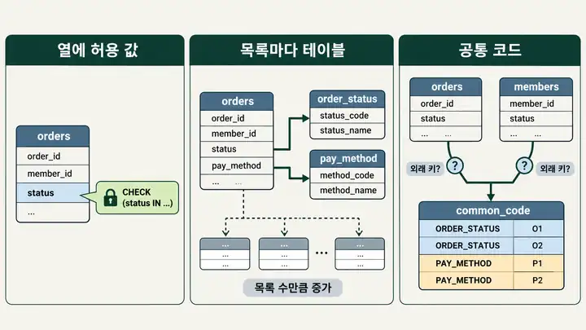
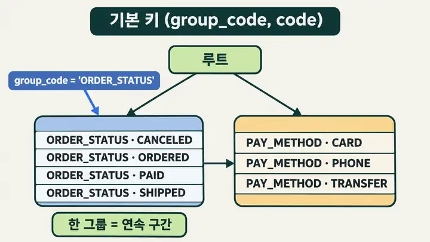
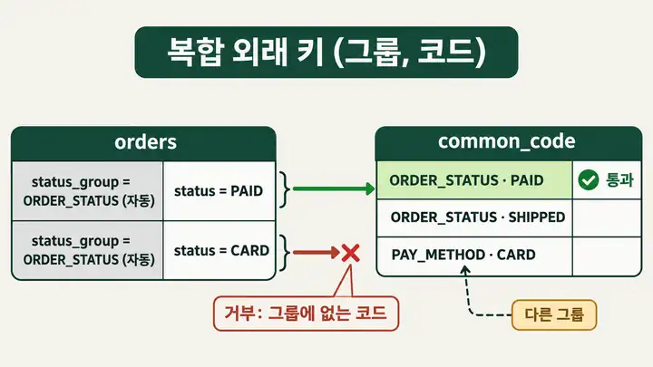
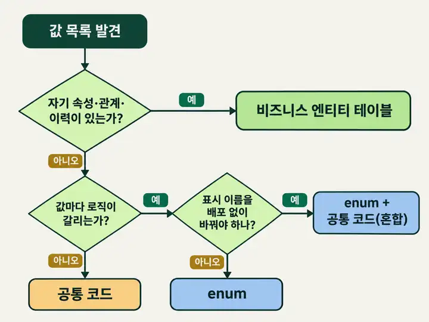

데이터베이스 설계 2편 / 01회
공통 코드 설계
주문 상태·결제 수단 같은 작은 값 목록을 한 테이블로 모으는 공통 코드 설계를 그룹화·추가 속성·참조 무결성·InnoDB 잠금까지 따져 보고, 자바 enum과 역할을 나누는 기준을 세운다.
오늘 끝나면 할 수 있는 것
- 코드 그룹과 코드로 이루어진 공통 코드 테이블을 DDL로 설계하고, 복합 기본 키
(group_code, code)의 열 순서가 InnoDB 클러스터형 인덱스에서 그룹 단위 조회를 어떻게 돕는지 설명할 수 있다. - 그룹화된 공통 코드 테이블에 단일 열 외래 키를 걸 수 없는 이유를 MySQL의 외래 키 인덱스 규칙으로 설명하고, 저장 생성 열을 이용한 복합 외래 키로 그룹 경계까지 데이터베이스가 지키게 만들 수 있다.
- 코드에 붙는 추가 속성을 범용 열, 속성 테이블, JSON 열, 전용 테이블 중 어디에 둘지 타입·제약·변경 비용을 근거로 고를 수 있다.
- 자바 enum이 바이트코드에서 어떤 클래스가 되고
switch가ordinal()에 어떻게 기대는지 추적해, ORDINAL 저장, 롤링 배포 중의 새 상수, 대소문자만 다른 코드 같은 장애를 미리 예측할 수 있다. - 어떤 값 목록이 공통 코드, 애플리케이션 enum, 독립된 비즈니스 엔티티 중 어디에 속하는지 판단 기준을 들어 분류할 수 있다.
핵심 강의 → 핵심 요약 → 실무 재판단 → 적용 연습 → 이해 확인
01 핵심 강의
이 강의의 차례 · 소제목 15개
- 이 회차의 질문: 작은 값 목록을 어디에 둘 것인가
- 공통 코드가 필요한 이유: 흩어진 문자열이 만드는 문제
- 공통 코드 테이블 설계: 코드 하나를 이루는 열
- 그룹화 설계: 코드 그룹과 코드
- 공통 코드와 추가 속성
- 공통 코드의 단점
- 한 층 아래: 외래 키가 요구하는 인덱스와 거는 잠금
- 공통 코드의 단점 해결 방안 1: 그룹 경계까지 데이터베이스가 지키게 하기
- 공통 코드의 단점 해결 방안 2: 애플리케이션이 맞추고 줄이기
- 공통 코드 vs 애플리케이션 ENUM 1: enum은 컴파일러가 아는 닫힌 집합이다
- 공통 코드 vs 애플리케이션 ENUM 2: enum을 테이블에 저장하는 방법과 그 대가
- 공통 코드 vs 애플리케이션 ENUM 3: 무엇을 어디에 둘 것인가
- 공통 코드 설계와 비즈니스 설계의 차이
- 흔한 오해와 함정
- 정리: 값 목록 하나를 만났을 때의 판단 순서
이 회차의 질문: 작은 값 목록을 어디에 둘 것인가
설계 1편에서는 요구 사항에서 엔티티를 찾고, 키를 정하고, 관계를 외래 키로 옮기고, 정규화로 사실 하나를 한곳에 두는 법을 다뤘다. 그런데 실제 스키마를 그리다 보면 그 틀에 딱 들어맞지 않는 값들이 계속 나온다. 주문 상태(접수, 결제 완료, 배송 중, 취소), 결제 수단(신용카드, 계좌이체, 휴대폰), 회원 등급, 배송사, 은행, 문의 유형 같은 것들이다. 이 값들은 몇 개에서 몇십 개 정도의 작은 목록이고, 목록 자체는 자주 바뀌지 않으며, 여러 테이블의 열이 그 목록 가운데 하나를 값으로 가진다. 화면에서는 드롭다운의 선택지로, 보고서에서는 사람이 읽는 이름으로 나타난다.
이런 값 목록은 엔티티라고 부르기에는 너무 가볍고, 그냥 문자열 열로 두기에는 너무 많은 곳에서 쓰인다. 그래서 많은 시스템이 이 값들을 하나의 테이블에 모아 관리한다. 이것을 흔히 공통 코드(common code)라고 부른다. 공통 코드는 설계가 쉬워 보이고, 실제로 처음 만들 때는 쉽다. 문제는 시간이 지나면서 드러난다. 외래 키를 걸 수 없어 엉뚱한 값이 들어가고, 코드마다 붙는 속성이 attr1, attr2 같은 이름 없는 열로 쌓이고, 코드 값이 애플리케이션의 if 문과 얽혀 누구도 함부로 바꾸지 못하게 된다.
이 회차는 세 가지 질문을 차례로 다룬다. 첫째, 공통 코드 테이블은 어떤 모양이어야 하는가. 열 구성, 그룹화, 추가 속성까지 설계한다. 둘째, 공통 코드로 모으면 무엇을 잃는가. 참조 무결성이 왜 깨지는지를 MySQL의 외래 키 규칙과 InnoDB 잠금까지 내려가 확인하고, 되찾는 방법을 두 갈래로 정리한다. 셋째, 같은 값 목록을 자바 enum으로 표현하면 무엇이 달라지는가. enum이 바이트코드에서 무엇이 되는지, JPA와 Hibernate가 enum을 어떻게 저장하고 읽는지를 추적한 뒤, 공통 코드와 enum과 비즈니스 엔티티를 가르는 기준을 세운다. 기준 환경은 MySQL 8.0 이상 InnoDB, Java 21, Hibernate 6.x다.
공통 코드가 필요한 이유: 흩어진 문자열이 만드는 문제
아무 장치 없이 시작한 주문 테이블을 생각해 보자. 주문 상태는 status VARCHAR(20) 열 하나이고, 어떤 값이 들어갈 수 있는지는 데이터베이스 어디에도 적혀 있지 않다. 주문 접수 API를 만든 개발자는 취소 상태를 'CANCEL'로 썼고, 관리자 화면을 만든 개발자는 'CANCELED'로 썼고, 정산 배치를 만든 개발자는 영국식 철자 'CANCELLED'로 썼다. 어느 쪽도 오류가 나지 않는다. 데이터베이스 입장에서는 모두 길이 20 이하의 문자열일 뿐이기 때문이다.
-- 가상의 데이터로 상태별 건수를 세어 보면
SELECT status, COUNT(*) FROM orders GROUP BY status;
-- status | COUNT(*)
-- ORDERED | ...
-- PAID | ...
-- CANCEL | ...
-- CANCELED | ...
-- CANCELLED | ...이제 "취소된 주문 수"를 묻는 질의는 어느 철자를 써도 일부만 센다. 이것이 첫 번째 문제, 값의 철자가 갈라지는 문제다. 사실 하나(이 주문은 취소되었다)가 세 가지 표현으로 흩어졌으니, 설계 1편에서 본 갱신 이상과 같은 뿌리를 가진 문제다. 같은 사실을 여러 곳에서 각자 표현하면 언젠가 표현이 어긋난다.
두 번째 문제는 표시 이름이 흩어지는 문제다. 화면에는 PAID가 아니라 "결제 완료"라고 보여야 한다. 이 번역표가 주문 목록 화면, 주문 상세 화면, 알림 메일 템플릿, 엑셀 다운로드, 정산 보고서에 각각 하드코딩되어 있으면, 운영팀이 "결제 완료"를 "결제 확인"으로 바꿔 달라고 할 때 다섯 군데를 찾아 고쳐야 한다. 하나를 빠뜨리면 같은 상태가 화면마다 다른 이름으로 보인다.
세 번째 문제는 목록을 물어볼 곳이 없다는 것이다. 주문 검색 화면의 "상태" 드롭다운에는 무엇을 어떤 순서로 보여 줘야 하는가. 더 이상 쓰지 않는 결제 수단은 선택지에서 빼야 하는데, 과거 주문의 상세 화면에서는 여전히 그 이름을 보여 줘야 한다. 이런 정보는 값 하나가 아니라 목록 전체에 대한 정보(구성원, 순서, 사용 여부)이고, 열 하나에 문자열을 넣는 방식으로는 표현할 자리가 없다. 네 번째로, 새 값을 추가할 때 영향 범위를 알 수 없다. 어떤 코드가 이 값 목록을 전제로 분기하는지 데이터베이스는 알려 주지 않는다.
이 문제를 푸는 선택지는 크게 세 가지다. 하나는 열 자체에 허용 값을 박는 것이다. MySQL 8.0.16부터 강제되는 CHECK (status IN (...)) 제약이나 MySQL의 ENUM 자료형이 여기에 속한다(8.0.16 이전의 CHECK는 구문만 받아들이고 무시했다). 값의 철자는 지켜지지만, 표시 이름·정렬 순서·사용 여부를 둘 자리가 없고 값 하나를 추가하려면 ALTER TABLE이 필요하다. 둘째는 값 목록마다 작은 테이블을 만드는 것이다. order_status, pay_method, bank 같은 조회용 테이블(lookup table)을 두고 주문 테이블이 외래 키로 참조한다. 무결성과 표시 정보가 모두 해결되지만, 값 목록이 50종이면 테이블도 50개, 관리 화면과 조회 코드도 50벌이 생긴다. 셋째가 모든 값 목록을 하나의 테이블에 모으는 것, 곧 공통 코드다.
| 선택지 | 철자 통일 | 표시 이름·순서·사용 여부 | 값 추가 방법 | 대가 |
|---|---|---|---|---|
열에 허용 값(CHECK, ENUM) | 데이터베이스가 강제 | 둘 곳이 없다 | ALTER TABLE | 목록 정보가 DDL 안에 갇힌다 |
| 값 목록마다 테이블 | 외래 키로 강제 | 테이블의 열로 둔다 | INSERT | 테이블·화면·코드가 목록 수만큼 늘어난다 |
| 공통 코드 테이블 하나 | 뒤에서 볼 조건을 갖춰야 강제 | 테이블의 열로 둔다 | INSERT | 참조 무결성, 열의 의미, 타입을 일부 잃는다 |
공통 코드는 세 번째 선택지가 가진 "테이블 하나, 관리 화면 하나"라는 경제성 때문에 널리 쓰인다. 그러나 표의 마지막 열에서 보듯 공짜가 아니다. 이 회차의 나머지는 그 대가가 정확히 무엇이고, 어떤 조건에서 감당할 만한지를 따지는 데 쓴다.

공통 코드 테이블 설계: 코드 하나를 이루는 열
가장 단순한 공통 코드 테이블부터 만들어 보자. 모든 코드를 한 테이블에 넣고, 코드 값 자체를 기본 키로 삼는다. 어떤 목록에 속하는지는 code_type 열로 구분한다.
CREATE TABLE common_code (
code VARCHAR(30) NOT NULL,
code_type VARCHAR(30) NOT NULL,
code_name VARCHAR(100) NOT NULL,
sort_order INT NOT NULL DEFAULT 0,
use_yn CHAR(1) NOT NULL DEFAULT 'Y',
description VARCHAR(500) NULL,
PRIMARY KEY (code),
CONSTRAINT ck_common_code_use_yn CHECK (use_yn IN ('Y', 'N'))
);각 열이 맡는 역할을 하나씩 짚어 보자. code는 다른 테이블에 실제로 저장되는 값이다. 주문 테이블의 status 열에는 "결제 완료"가 아니라 PAID가 들어간다. 코드 값은 한 번 정해지면 바꾸기 어렵다. 이 값이 수백만 건의 주문 행에 복사되어 있고, 애플리케이션 코드의 상수와 조건문에도 박혀 있기 때문이다. 그래서 코드 값은 바뀌지 않을 이름으로 짓는다. 설계 1편 3회차에서 기본 키는 바뀔 이유가 없어야 한다고 했는데, 코드 값은 다른 테이블이 참조하는 키라는 점에서 같은 요구를 받는다.
code_name은 사람에게 보여 줄 이름이다. 코드 값과 반대로 이 열은 자유롭게 바뀌어도 된다. "결제 완료"를 "결제 확인"으로 바꾸는 일은 이 행 하나를 고치는 것으로 끝나야 하고, 그러려면 애플리케이션 로직이 절대 code_name을 조건으로 쓰지 않아야 한다. if (name.equals("결제 완료")) 같은 코드가 하나라도 있으면 표시 이름을 바꾸는 순간 로직이 깨진다. 코드 값은 기계를 위한 식별자이고, 코드 이름은 사람을 위한 표시라는 역할 분담이 공통 코드 설계의 출발점이다.
sort_order는 목록의 표시 순서다. 이 열이 없으면 드롭다운은 ORDER BY code로 정렬할 수밖에 없는데, 그러면 CANCELED, ORDERED, PAID, SHIPPED처럼 알파벳 순서가 되어 업무 흐름(접수 → 결제 → 배송)과 어긋난다. 순서는 업무가 정하는 정보이므로 데이터로 둔다. use_yn은 사용 여부다. 코드는 거의 삭제하지 않는다. 과거 주문이 그 코드를 참조하고 있으므로 행을 지우면 과거 주문의 상태 이름을 보여 줄 수 없게 되고, 외래 키가 걸려 있다면 삭제 자체가 거부된다. 그래서 "더 이상 새로 선택하지 못하게 하되, 과거 데이터는 계속 해석할 수 있게" 사용 여부 플래그를 끈다. 행을 지우는 대신 표시만 바꾸는 이 방식은 5회차의 Soft Delete와 같은 생각이다.
코드 값을 무엇으로 지을지도 정해야 한다. 한쪽 끝은 PAID, SHIPPED처럼 뜻이 보이는 영문 식별자이고, 다른 쪽 끝은 01, 02 같은 번호다. 영문 식별자는 SQL을 직접 읽거나 로그를 볼 때 공통 코드 테이블을 조인하지 않아도 뜻을 알 수 있다는 큰 장점이 있다. 번호는 짧지만, 주문 테이블에 status = '03'만 보이면 사람은 매번 코드 표를 찾아봐야 한다. MySQL InnoDB에서 VARCHAR 값은 실제 바이트 길이에 길이 접두 1바이트(255바이트 이하일 때)를 더한 만큼 차지하므로, 'SHIPPED'는 8바이트, '03'은 3바이트다. 주문 행 하나에 몇 바이트 차이이고, 행이 수억 건이 아니라면 가독성을 사는 값으로 충분하다. 피해야 할 것은 A01의 첫 글자가 대분류, 숫자가 소분류를 뜻하는 식으로 코드 값의 구조에 의미를 숨기는 것이다. 그것은 계층 구조를 문자열 안에 감춘 것이고, 분류 체계가 바뀌는 날 모든 코드 값을 바꿔야 한다. 계층이 필요하면 2회차에서 다룰 계층 구조 설계로 드러내서 표현한다.
이제 이 첫 설계의 문제를 보자. 기본 키가 code 하나이므로 코드 값은 모든 목록을 통틀어 유일해야 한다. 결제 수단의 CARD와 환불 수단의 CARD는 공존할 수 없다. 그래서 이런 설계를 오래 쓴 시스템에는 PAY_CARD, REFUND_CARD처럼 목록 이름을 접두어로 붙인 코드가 생긴다. 그런데 이 접두어는 code_type 열과 같은 사실을 한 번 더 적은 것이다. code_type = 'PAY_METHOD'인데 코드가 REFUND_CARD인 행을 막을 장치도 없다. 사실 하나를 두 곳에 적었으니 어긋날 수 있는 구조다. 목록을 구분하는 정보를 키 안으로 정식으로 끌어들여야 한다. 그것이 그룹화 설계다.
그룹화 설계: 코드 그룹과 코드
목록 하나를 코드 그룹(code group)이라 부르고, 그룹을 별도 테이블로 둔다. 코드는 "어느 그룹의 어느 값인가"로 식별된다. 코드 값은 그룹 안에서만 유일하면 된다.
CREATE TABLE code_group (
group_code VARCHAR(30) COLLATE utf8mb4_bin NOT NULL,
group_name VARCHAR(100) NOT NULL,
description VARCHAR(500) NULL,
PRIMARY KEY (group_code)
);
CREATE TABLE common_code (
group_code VARCHAR(30) COLLATE utf8mb4_bin NOT NULL,
code VARCHAR(30) COLLATE utf8mb4_bin NOT NULL,
code_name VARCHAR(100) NOT NULL,
sort_order INT NOT NULL DEFAULT 0,
use_yn CHAR(1) NOT NULL DEFAULT 'Y',
description VARCHAR(500) NULL,
PRIMARY KEY (group_code, code),
CONSTRAINT fk_common_code_group
FOREIGN KEY (group_code) REFERENCES code_group (group_code),
CONSTRAINT ck_common_code_use_yn CHECK (use_yn IN ('Y', 'N'))
);
INSERT INTO code_group (group_code, group_name) VALUES
('ORDER_STATUS', '주문 상태'),
('PAY_METHOD', '결제 수단');
INSERT INTO common_code (group_code, code, code_name, sort_order) VALUES
('ORDER_STATUS', 'ORDERED', '주문 접수', 1),
('ORDER_STATUS', 'PAID', '결제 완료', 2),
('ORDER_STATUS', 'SHIPPED', '배송 중', 3),
('ORDER_STATUS', 'CANCELED', '주문 취소', 4),
('PAY_METHOD', 'CARD', '신용카드', 1),
('PAY_METHOD', 'TRANSFER', '계좌이체', 2),
('PAY_METHOD', 'PHONE', '휴대폰', 3);코드 열에 붙인 COLLATE utf8mb4_bin은 뒤의 "해결 방안 2"에서 자세히 설명한다. 지금은 코드 값을 대소문자까지 정확히 비교하게 만드는 선언이라고만 알아 두자. 이 설계에서 common_code의 기본 키는 (group_code, code) 복합 키다. 설계 1편 3회차에서 복합 키의 열 순서는 조회 패턴으로 정한다고 했다. 공통 코드에 대한 조회는 거의 두 가지다. "주문 상태 그룹의 코드를 전부 순서대로 달라"(드롭다운), 그리고 "주문 상태 그룹의 PAID는 이름이 무엇인가"(표시 이름 해석). 둘 다 그룹을 먼저 지정한다. 그러니 그룹이 앞에 오는 것이 맞다.
이 순서가 InnoDB에서 무엇을 의미하는지 한 층 내려가 보자. InnoDB 테이블은 기본 키를 기준으로 정렬된 B+Tree, 곧 클러스터형 인덱스(clustered index) 그 자체이고, 행 데이터는 리프 페이지에 기본 키 순서로 놓인다. 기본 키가 (group_code, code)이므로 리프에는 먼저 그룹 코드 순으로, 같은 그룹 안에서는 코드 값 순으로 행이 늘어선다. 결과적으로 한 그룹의 행은 물리적으로 붙어 있다.
common_code 클러스터형 인덱스의 리프 (기본 키 순서) ┌─────────────────────────────────────────────────────────────┐ │ (ORDER_STATUS, CANCELED) 주문 취소 sort 4 │ │ (ORDER_STATUS, ORDERED) 주문 접수 sort 1 ← 그룹 하나가 │ │ (ORDER_STATUS, PAID) 결제 완료 sort 2 연속된 구간 │ │ (ORDER_STATUS, SHIPPED) 배송 중 sort 3 │ │ (PAY_METHOD, CARD) 신용카드 sort 1 │ │ (PAY_METHOD, PHONE) 휴대폰 sort 3 │ │ (PAY_METHOD, TRANSFER) 계좌이체 sort 2 │ └─────────────────────────────────────────────────────────────┘ WHERE group_code = 'ORDER_STATUS' → 기본 키 앞부분으로 구간 하나를 읽는다 WHERE group_code = 'ORDER_STATUS' AND code = 'PAID' → 기본 키 전체로 행 하나를 찾는다
드롭다운 조회 WHERE group_code = 'ORDER_STATUS' AND use_yn = 'Y' ORDER BY sort_order는 기본 키의 앞 열로 구간 하나를 읽고, 그 몇 행을 sort_order로 정렬한다. 리프에 놓인 순서는 코드 값 순이지 sort_order 순이 아니므로 정렬 단계가 따로 필요하다. 그러나 대상이 한 그룹의 수십 행이라 이 비용은 무시할 만하다. 위 데이터로 MySQL 8.4.13과 8.0.46에서 EXPLAIN을 실행하면 type = ref, key = PRIMARY, ref = const, Extra = Using where; Using filesort로 나와, 기본 키 앞 열로 구간을 읽고 정렬을 따로 한다는 것이 그대로 보인다(rows, filtered 같은 추정치는 실행 환경과 통계에 따라 달라진다). (group_code, sort_order) 보조 인덱스를 따로 만들 수도 있지만, 작은 테이블에 인덱스를 늘리는 것은 얻는 것보다 관리할 것이 많다. 표시 이름 해석은 기본 키 전체를 등호로 지정하므로 행 하나를 찾는 조회가 된다.
반대 순서 (code, group_code)로 키를 만들었다면 같은 그룹의 행이 코드 값의 알파벳 순서를 따라 다른 그룹의 행들 사이에 흩어진다. 그룹 단위 조회는 기본 키의 앞 열을 쓰지 못해 전체를 훑어야 한다. 테이블이 작으니 당장 느리지는 않겠지만, 더 중요한 차이는 뒤에서 볼 외래 키다. 외래 키는 참조되는 쪽에 "참조 열이 앞에 오는 인덱스"를 요구하는데, 열 순서가 그 요구를 만족하는지를 결정한다.
code_group 테이블을 따로 두는 이유도 짚어 두자. 그룹을 문자열로만 두면 ORDER_STATUS와 ORDER_STAUTS(오타)가 별개의 그룹으로 조용히 생긴다. 그룹 테이블과 fk_common_code_group 외래 키가 이것을 막는다. 또 그룹 단위로 붙는 정보, 예를 들어 그룹의 설명, 담당 부서, "운영자가 관리 화면에서 수정해도 되는 그룹인가" 같은 플래그를 둘 자리가 생긴다. 마지막 플래그는 뒤에서 애플리케이션 로직과 얽힌 그룹을 보호할 때 쓸모가 있다. 참고로 이 외래 키에 필요한 자식 쪽 인덱스는 따로 만들 필요가 없다. MySQL은 자식 테이블에 외래 키 열이 앞에 오는 인덱스를 요구하는데, 기본 키 (group_code, code)가 이미 group_code로 시작하기 때문이다.

공통 코드와 추가 속성
공통 코드를 운영하다 보면 이름과 순서만으로는 부족한 순간이 온다. 결제 수단에는 수수료율이 필요하고, 은행에는 금융기관 표준 코드가 필요하고, 주문 상태에는 "이 상태에서 고객이 직접 취소할 수 있는가"라는 정보가 필요해진다. 이런 추가 속성(additional attribute)은 그룹마다 종류가 다르다. 결제 수단의 속성과 은행의 속성은 개수도 뜻도 타입도 다르다. 그런데 테이블은 하나다. 여기서 선택지가 넷으로 갈린다.
첫째는 범용 열이다. common_code에 attr1부터 attr5까지 VARCHAR 열을 두고, 그룹마다 각 열의 뜻을 code_group에 적는다(attr1_name = '수수료율'). 가장 빠르게 만들 수 있지만 대가가 크다. 모든 속성이 문자열이므로 수수료율 '2.5', '2.50', '2,5'가 모두 들어간다. 숫자로 계산하려면 매번 형 변환을 해야 하고, 형 변환이 실패하는 행이 있는지는 실행해 봐야 안다. CHECK 제약은 같은 행의 다른 열을 참조할 수 있으므로 "그룹이 결제 수단이면 attr1은 숫자 형식이어야 한다" 같은 규칙을 이론상 쓸 수는 있다. 그러나 그룹이 늘 때마다 모든 그룹이 공유하는 테이블의 제약식이 길어지고, 그 변경은 공유 테이블에 대한 DDL이 된다. 무엇보다 SQL에 attr1이라고만 적혀 있으니 쿼리를 읽는 사람이 그 뜻을 알려면 다른 테이블을 찾아봐야 한다.
둘째는 속성 테이블이다. code_attribute(group_code, code, attr_name, attr_value)처럼 속성 하나를 행 하나로 저장한다. 열 개수 제한이 사라지고 속성 이름이 데이터에 드러나지만, 값은 여전히 문자열이고, 코드 하나의 속성 세 개를 한 행으로 보려면 같은 테이블을 세 번 조인하거나 피벗해야 한다. 이 구조는 엔티티-속성-값(EAV) 모델의 축소판이며, 그 비용은 8회차에서 따로 다룬다. 셋째는 JSON 열이다. attributes JSON 열에 {"feeRate": 2.5}처럼 넣는다. MySQL의 JSON 자료형은 들어오는 값이 올바른 JSON 문서인지는 검사하지만 그 안의 키와 타입을 그룹별로 강제하지는 않는다. 생성 열과 함수 기반 인덱스로 일부 키를 꺼내 쓰는 방법은 9회차의 주제다.
넷째는 전용 테이블로 승격하는 것이다. 결제 수단에 수수료율이 필요하다면 pay_method(code, name, fee_rate DECIMAL(5,2), ...) 테이블을 따로 만든다. 수수료율은 정확한 타입을 갖고, CHECK (fee_rate BETWEEN 0 AND 100) 같은 제약을 그 테이블에만 걸 수 있고, 주문은 이 테이블을 단일 열 외래 키로 참조할 수 있다. 공통 코드의 경제성은 잃지만, 이 값 목록이 더 이상 "이름과 순서만 있는 목록"이 아니라는 사실을 스키마가 정직하게 드러낸다.
| 방식 | 타입·제약 | 속성 추가 비용 | 읽는 사람에게 | 어울리는 경우 |
|---|---|---|---|---|
범용 열 attr1..n | 모두 문자열, 그룹별 제약 어려움 | 뜻 정의만 추가(열이 남아 있는 동안) | 열 이름이 뜻을 말하지 않는다 | 표시용 보조 문구 정도 |
| 속성 테이블 | 모두 문자열 | 행 추가 | 속성 이름은 보이지만 조회가 길다 | 그룹마다 속성이 크게 다르고 거의 조회하지 않을 때 |
| JSON 열 | 문서 형식만 검사 | 문서에 키 추가 | 키 이름은 보인다 | 읽기 위주, 구조가 자주 바뀌는 보조 정보 |
| 전용 테이블 | 정확한 타입과 제약 | DDL | 스키마가 곧 문서 | 속성이 로직·계산에 쓰일 때 |
추가 속성 가운데 특히 조심할 것은 행동을 결정하는 속성이다. 주문 상태 코드에 cancelable_yn 속성을 두고 애플리케이션이 그 값을 읽어 취소 버튼을 보여 준다고 하자. 운영자가 관리 화면에서 SHIPPED의 cancelable_yn을 Y로 바꾸면 배포 없이 "배송 중 취소"가 열린다. 유연해 보이지만, 배송 중인 주문을 취소할 때 필요한 반송 처리와 환불 계산이 코드에 구현되어 있지 않다면 이 변경은 장애로 이어진다. 데이터로 행동을 바꿀 수 있게 만들었다면, 데이터가 가질 수 있는 모든 조합에 대해 코드가 올바르게 동작해야 한다. 그 조합을 다 지원할 생각이 없다면 그 속성은 데이터가 아니라 코드에 있어야 한다. 이 판단은 뒤의 enum 비교에서 다시 만난다.
공통 코드의 단점
이제 주문 테이블이 공통 코드를 쓰게 만들어 보자. 주문에는 상태와 결제 수단이 있고, 둘 다 공통 코드의 값이다. 가장 자연스러워 보이는 첫 시도는 코드 값만 저장하는 것이다.
CREATE TABLE orders (
order_id BIGINT NOT NULL AUTO_INCREMENT,
member_id BIGINT NOT NULL,
status VARCHAR(30) COLLATE utf8mb4_bin NOT NULL, -- ORDER_STATUS 그룹의 코드
pay_method VARCHAR(30) COLLATE utf8mb4_bin NOT NULL, -- PAY_METHOD 그룹의 코드
ordered_at DATETIME NOT NULL,
PRIMARY KEY (order_id)
);주석에 적힌 "ORDER_STATUS 그룹의 코드"라는 사실은 주석에만 있다. 데이터베이스는 이 사실을 모른다. 여기서부터 공통 코드의 단점이 하나씩 드러난다.
단점 1: 참조 무결성을 잃는다
status에 외래 키를 걸어 보려고 하면 곧바로 막힌다. FOREIGN KEY (status) REFERENCES common_code (code)는 MySQL이 거부한다. 참조되는 테이블에 "참조 열이 맨 앞에 오는 인덱스"가 있어야 하는데, common_code의 기본 키는 group_code로 시작하고 code는 두 번째 열이기 때문이다(규칙은 다음 절에서 자세히 본다). 그렇다고 common_code(code)에 보조 인덱스를 하나 더 만들어 외래 키를 걸면 더 나쁜 일이 생긴다. MySQL 8.0의 InnoDB는 유일하지 않은 인덱스를 참조하는 외래 키도 허용하는데(표준 SQL을 벗어난 확장이다), 이때 외래 키가 검사하는 것은 "어느 그룹이든 이 코드 값을 가진 행이 하나라도 있는가"다. 결제 수단 그룹에 CARD가 있으므로 status = 'CARD'인 주문이 검사를 통과한다. 무결성을 지키는 것처럼 보이면서 실제로는 그룹 경계를 지키지 못하는 제약이다.
결국 많은 시스템이 공통 코드를 참조하는 열에 외래 키를 걸지 않는다. 그러면 status에는 어떤 문자열이든 들어간다. 오타, 다른 그룹의 코드, 이미 사용 중지된 코드가 모두 들어갈 수 있고, 그것을 막는 것은 애플리케이션 코드의 검증뿐이다. 검증을 거치지 않는 경로, 예를 들어 운영자가 직접 실행한 UPDATE, 다른 팀의 배치, 데이터 이관 스크립트는 아무 저항 없이 잘못된 값을 넣는다. 처음 문제였던 "철자가 갈라지는 문제"를 풀려고 공통 코드를 만들었는데, 데이터베이스 수준에서는 그 문제가 그대로 남은 셈이다.
단점 2: 열의 의미가 스키마에서 사라진다
값 목록마다 테이블을 두면 ERD에서 orders.status는 order_status 테이블로 선이 이어지고, 스키마만 봐도 이 열에 무엇이 들어가는지 알 수 있다. 공통 코드에서는 선이 없거나, 있더라도 모든 테이블의 수많은 열이 하나의 common_code로 이어진다. 어느 열이 어느 그룹을 쓰는지는 주석, 위키, 애플리케이션 코드 어딘가에 흩어진다. 설계 1편 1회차에서 스키마는 가장 오래 사는 코드라고 했다. 그 코드가 자기 열의 뜻을 스스로 말하지 못하게 되는 것이 두 번째 대가다.
단점 3: 모든 값이 같은 모양을 강요받는다
공통 코드 테이블의 code 열은 하나이므로 모든 그룹의 코드가 같은 타입과 같은 최대 길이를 갖는다. 어떤 그룹은 두 글자 코드면 충분하고 어떤 그룹은 긴 식별자가 필요해도 한 정의를 공유한다. 추가 속성에서 본 것처럼, 그룹마다 다른 속성은 이름 없는 범용 열이나 문자열 값으로 밀려난다. "이 그룹의 코드는 세 자리 숫자여야 한다" 같은 그룹별 규칙도 하나의 공유 테이블에 몰아 써야 한다.
단점 4: 조회가 길어지고, 조건 하나를 빠뜨리면 결과가 틀린다
주문 목록에 상태 이름과 결제 수단 이름을 함께 보여 주려면 같은 공통 코드 테이블을 별칭을 바꿔 두 번 조인한다.
SELECT o.order_id,
st.code_name AS status_name,
pm.code_name AS pay_method_name
FROM orders o
JOIN common_code st ON st.group_code = 'ORDER_STATUS' AND st.code = o.status
JOIN common_code pm ON pm.group_code = 'PAY_METHOD' AND pm.code = o.pay_method
WHERE o.member_id = 1;각 조인은 기본 키 두 열을 모두 등호로 지정하므로 주문 한 건당 코드 행 하나를 찾는다. 공통 코드 테이블은 작아서 버퍼 풀에 머물기 쉽고, 이 조인 자체가 무거운 경우는 드물다. 진짜 위험은 ON 절의 그룹 조건이다. 누군가 환불 수단 그룹 REFUND_METHOD를 추가하면서 거기에도 CARD 코드를 만들었다고 하자. 위 질의에서 pm.group_code = 'PAY_METHOD'를 빠뜨린 버전은 pm.code = 'CARD'에 맞는 행이 두 그룹에서 하나씩, 두 개가 된다. 설계 1편 4회차에서 본 조인 뻥튀기가 일어나 카드로 결제한 주문이 결과에 두 번 나온다. 이 질의는 REFUND_METHOD 그룹이 생기기 전까지는 올바른 결과를 냈다는 점이 더 고약하다. 다른 그룹에 행을 추가한 것만으로 무관해 보이던 질의의 결과가 바뀐다.
-- 주문 1건(PAID, CARD)과 ('REFUND_METHOD', 'CARD', '카드 환불') 행이 있는 상태
-- pm.group_code = 'PAY_METHOD'를 빠뜨린 버전
+----------+---------------+-----------------+
| order_id | status_name | pay_method_name |
+----------+---------------+-----------------+
| 1 | 결제 완료 | 신용카드 |
| 1 | 결제 완료 | 카드 환불 |
+----------+---------------+-----------------+
-- 그룹 조건을 모두 적은 원래 질의
+----------+---------------+-----------------+
| order_id | status_name | pay_method_name |
+----------+---------------+-----------------+
| 1 | 결제 완료 | 신용카드 |
+----------+---------------+-----------------+원래 질의의 EXPLAIN에서 st와 pm은 둘 다 type = eq_ref, key = PRIMARY, ref = const,…o.status(또는 o.pay_method)로 나온다. 그룹 상수와 주문의 코드 값으로 기본 키 전체를 짚어 행 하나를 찾는다는 뜻이다.
단점 5: 모든 테이블의 의존이 한 테이블로 몰린다
값 목록마다 테이블을 두면 주문은 order_status에, 회원은 member_grade에 의존한다. 공통 코드에서는 시스템의 거의 모든 테이블이 common_code 하나에 의존한다. 외래 키를 제대로 걸면(다음 절의 방법으로) 이 집중은 잠금으로도 나타난다. 주문, 회원, 문의, 정산을 넣는 모든 트랜잭션이 같은 테이블의 레코드를 검사하고 잠근다. 공통 코드 테이블에 열 하나를 추가하는 DDL도 연결된 테이블들과 얽힌다. 구체적인 동작은 바로 다음 절에서 InnoDB 수준으로 확인한다.
단점 6: 데이터인 척하는 코드
공통 코드의 약속은 "값 목록을 데이터로 관리하니 배포 없이 바꿀 수 있다"이다. 그런데 주문 상태 코드는 애플리케이션 곳곳의 조건문에 등장한다. 결제가 끝나면 PAID로 바꾸고, SHIPPED면 취소를 막고, CANCELED면 환불을 시작한다. 이런 코드 값은 관리 화면에서 이름을 바꾸거나 사용 중지하는 순간 프로그램이 깨진다. 표시 이름과 순서는 데이터처럼 바꿀 수 있어도, 코드 값의 존재 자체는 프로그램의 일부다. 운영자에게 "언제든 바꿀 수 있는 데이터"처럼 보이는 곳에 실제로는 바꾸면 안 되는 값이 섞여 있다는 것, 이것이 공통 코드에서 가장 자주 사고가 나는 지점이다.
한 층 아래: 외래 키가 요구하는 인덱스와 거는 잠금
단점 1과 단점 5를 이해하려면 MySQL InnoDB가 외래 키를 어떻게 검사하는지 알아야 한다. 자식 테이블에 행을 넣거나 외래 키 열을 바꾸면, InnoDB는 그 값이 부모 테이블에 있는지 확인한다. 이 확인이 테이블 전체를 훑는 일이 되지 않도록 MySQL은 양쪽에 인덱스를 요구한다. MySQL 8.0 문서는 참조하는 테이블에 외래 키 열이 맨 앞에 같은 순서로 오는 인덱스가 있어야 하고, 없으면 자동으로 만든다고 적고 있다. 참조되는 테이블에도 참조 열이 맨 앞에 같은 순서로 오는 인덱스가 있어야 한다. 자식 쪽은 자동으로 만들어 주지만 부모 쪽은 만들어 주지 않는다.
이 규칙을 공통 코드에 대 보자. common_code의 인덱스는 기본 키 (group_code, code)뿐이다. REFERENCES common_code (code)는 code가 맨 앞에 오는 인덱스를 찾지 못해 거부된다. REFERENCES common_code (group_code, code)는 기본 키와 열과 순서가 일치하므로 받아들여진다. 그러려면 자식 쪽도 두 열 (그룹, 코드)를 가져야 한다. 단일 열 외래 키가 불가능한 이유가 여기에 있다. MySQL 8.4에서는 규칙이 하나 더 엄격해졌다. 8.4 문서는 유일하지 않은 인덱스나 키의 일부만 참조하는 외래 키를 비표준으로 보고 사용 중단(deprecated) 대상으로 표시했으며, 새로 만들려면 restrict_fk_on_non_standard_key 설정을 바꿔야 한다. 이 변수는 8.4.0에 추가되었고 기본값이 ON이어서, 기본 설정에서는 앞의 "code에 보조 인덱스를 만들고 외래 키 걸기" 우회도 막힌다. 어느 버전이든 올바른 방법은 기본 키 전체를 참조하는 것이다.
두 버전에서 직접 실행해 보면 차이가 오류 문구에도 드러난다. 앞의 common_code를 그대로 두고 orders에 FOREIGN KEY (status) REFERENCES common_code (code)를 걸면 두 버전 모두 거부하는데, 8.0은 인덱스가 없다고 하고 8.4는 유일 키가 없다고 한다. 이어서 CREATE INDEX ix_code ON common_code (code)로 유일하지 않은 보조 인덱스를 만든 뒤 같은 외래 키를 다시 걸면, 8.0은 경고 없이 받아들이고 status = 'CARD'인 주문도 그대로 들어가지만, 8.4는 같은 6125 오류로 다시 거부한다.
-- 8.0.46, 보조 인덱스 없이
ERROR 1822 (HY000): Failed to add the foreign key constraint. Missing index for constraint 'orders_ibfk_1' in the referenced table 'common_code'
-- 8.0.46, ix_code (code) 를 만든 뒤: 외래 키 생성 성공, 이어서
INSERT INTO orders (member_id, status) VALUES (1, 'CARD'); -- 성공 (PAY_METHOD 그룹의 CARD로 통과)
-- 8.4.13 (restrict_fk_on_non_standard_key = 1), 보조 인덱스가 없을 때와 있을 때 모두
ERROR 6125 (HY000): Failed to add the foreign key constraint. Missing unique key for constraint 'orders_ibfk_1' in the referenced table 'common_code'문자열 열에는 조건이 하나 더 있다. 외래 키와 참조 키의 대응 열은 비슷한 자료형이어야 하는데, 문자열 길이는 달라도 되지만 문자 집합과 콜레이션은 같아야 한다. 앞의 DDL에서 common_code.code와 orders.status에 똑같이 COLLATE utf8mb4_bin을 붙인 이유 중 하나가 이것이다. 한쪽만 바꾸면 외래 키를 만들 수 없다. 뒤에서 만들 orders에서 status만 COLLATE 없이(기본 utf8mb4_0900_ai_ci) 선언하면 MySQL 8.4.13과 8.0.46 모두 ERROR 3780 (HY000): Referencing column 'status' and referenced column 'code' in foreign key constraint 'orders2_ibfk_1' are incompatible.로 거부한다(제약 이름은 실험에 쓴 테이블 이름에서 나왔다).
이제 잠금이다. MySQL 8.0의 InnoDB 잠금 문서는, 외래 키 제약이 정의되어 있으면 제약을 검사해야 하는 INSERT, UPDATE, DELETE가 검사를 위해 살펴보는 레코드에 공유 레코드 잠금(shared record lock)을 건다고 밝힌다. 제약 검사가 실패한 경우에도 이 잠금을 건다. 주문을 넣는 트랜잭션은 common_code의 ('ORDER_STATUS', 'ORDERED') 레코드에 공유 잠금을 거는 것이다. 공유 잠금끼리는 충돌하지 않으므로 주문을 넣는 트랜잭션끼리는 서로 막지 않는다. 그러나 그 코드 행을 고치는 UPDATE는 배타 잠금(exclusive lock)이 필요하므로 공유 잠금과 충돌한다.
이 잠금은 눈으로 확인할 수 있다. 뒤의 "해결 방안 1"에서 만드는 복합 외래 키 orders로, 트랜잭션 안에서 주문 하나를 넣고 커밋하기 전에 performance_schema.data_locks에서 자기 스레드의 잠금을 조회했다.
BEGIN;
INSERT INTO orders (member_id, status, pay_method, ordered_at) VALUES (2, 'ORDERED', 'CARD', '2026-11-17 11:00:00');
SELECT object_name, index_name, lock_type, lock_mode, lock_status, lock_data
FROM performance_schema.data_locks
WHERE object_schema = DATABASE() AND thread_id = PS_CURRENT_THREAD_ID()
ORDER BY object_name, lock_type;
+-------------+------------+-----------+---------------+-------------+---------------------------+
| object_name | index_name | lock_type | lock_mode | lock_status | lock_data |
+-------------+------------+-----------+---------------+-------------+---------------------------+
| common_code | PRIMARY | RECORD | S,REC_NOT_GAP | GRANTED | 'ORDER_STATUS', 'ORDERED' |
| common_code | PRIMARY | RECORD | S,REC_NOT_GAP | GRANTED | 'PAY_METHOD', 'CARD' |
| common_code | NULL | TABLE | IS | GRANTED | NULL |
| orders | NULL | TABLE | IX | GRANTED | NULL |
+-------------+------------+-----------+---------------+-------------+---------------------------+외래 키 두 개가 각각 찾은 코드 레코드에 공유 레코드 잠금(S,REC_NOT_GAP, 간격은 잠그지 않는 레코드 잠금)이 걸렸고, common_code 테이블에는 의도 공유 잠금(IS)만 걸렸다. 테이블 전체를 막는 잠금이 아니라 참조한 행 두 개에 대한 잠금이다.
시간 →
T1 (주문 대량 적재 배치)
BEGIN
INSERT orders(status='ORDERED') ── 외래 키 검사: common_code('ORDER_STATUS','ORDERED')에 S 잠금
INSERT orders(status='ORDERED')
... 수만 건 ... COMMIT → S 잠금 해제
│
T2 (운영자가 표시 이름 수정) ▼
UPDATE common_code SET code_name = '주문 확인'
WHERE group_code = 'ORDER_STATUS' AND code = 'ORDERED'
── 같은 레코드에 X 잠금 필요 → S와 충돌 → 대기 ─────────────────────── 진행
(기다림이 innodb_lock_wait_timeout을 넘으면 T2가 오류로 끝난다)
그림은 표시 이름 하나를 바꾸는 사소한 작업이 무관해 보이는 배치 트랜잭션 때문에 멈추는 상황을 보여 준다. InnoDB의 잠금 대기 시간 상한인 innodb_lock_wait_timeout의 기본값은 50초이고, 이를 넘기면 기다리던 문장이 오류로 끝난다. MySQL 8.4.13에서 한 세션이 주문을 넣고 커밋하지 않은 채 6초를 머무는 동안, 다른 세션에서 SET SESSION innodb_lock_wait_timeout = 3으로 상한을 줄이고 그림의 UPDATE를 실행하면 3초를 기다린 뒤 ERROR 1205 (HY000): Lock wait timeout exceeded; try restarting transaction으로 끝났다. 첫 세션이 끝난 뒤 같은 UPDATE를 다시 실행하면 바로 1행이 바뀐다. 코드 행을 고치는 일은 드물기 때문에 이 충돌이 매일 일어나지는 않는다. 그러나 "공통 코드는 언제든 고쳐도 되는 작은 테이블"이라는 직관과 달리, 외래 키로 엮인 순간 이 테이블의 행은 시스템 전체의 쓰기 트랜잭션과 잠금을 공유한다는 사실은 알고 있어야 한다.
DDL도 마찬가지다. MySQL 문서는 외래 키로 연결된 테이블에 메타데이터 잠금(metadata lock)을 필요한 만큼 확장해, 관련 테이블에서 충돌하는 DML과 DDL이 동시에 실행되지 않게 한다고 적고 있다. common_code에 열을 추가하는 ALTER TABLE은 이 테이블만의 일이 아니라 이 테이블을 참조하는 테이블들과 얽힌 작업이 된다. 마지막으로 참조 동작이다. ON DELETE와 ON UPDATE를 적지 않으면 기본값은 NO ACTION이고, MySQL에서 이것은 RESTRICT와 같다. 주문이 참조하는 코드 행을 지우려 하면 거부된다. 다음 절의 복합 외래 키 orders에 PAID 주문이 있는 상태에서 DELETE FROM common_code WHERE group_code = 'ORDER_STATUS' AND code = 'PAID'를 실행하면 MySQL 8.4.13과 8.0.46 모두 ERROR 1451 (23000): Cannot delete or update a parent row: a foreign key constraint fails로 시작하는 오류를 낸다. 코드는 지우지 않고 use_yn을 끈다는 앞의 원칙이 외래 키와 정확히 맞물리는 지점이다.
공통 코드의 단점 해결 방안 1: 그룹 경계까지 데이터베이스가 지키게 하기
외래 키가 (그룹, 코드) 두 열을 요구한다면, 자식 테이블에 그룹 열을 만들어 주면 된다. 그런데 이 그룹 열의 값은 행마다 다를 이유가 없다. orders.status는 언제나 ORDER_STATUS 그룹의 코드다. 행마다 같은 상수를 애플리케이션이 넣게 하면 그 열에 다른 값이 들어갈 여지가 생긴다. MySQL의 저장 생성 열(stored generated column)을 쓰면 이 상수를 데이터베이스가 직접 채우게 할 수 있다.
CREATE TABLE orders (
order_id BIGINT NOT NULL AUTO_INCREMENT,
member_id BIGINT NOT NULL,
status VARCHAR(30) COLLATE utf8mb4_bin NOT NULL,
pay_method VARCHAR(30) COLLATE utf8mb4_bin NOT NULL,
status_group VARCHAR(30) COLLATE utf8mb4_bin
AS ('ORDER_STATUS') STORED NOT NULL,
pay_method_group VARCHAR(30) COLLATE utf8mb4_bin
AS ('PAY_METHOD') STORED NOT NULL,
ordered_at DATETIME NOT NULL,
PRIMARY KEY (order_id),
CONSTRAINT fk_orders_status
FOREIGN KEY (status_group, status)
REFERENCES common_code (group_code, code),
CONSTRAINT fk_orders_pay_method
FOREIGN KEY (pay_method_group, pay_method)
REFERENCES common_code (group_code, code)
);생성 열의 식에는 리터럴, 결정적인 내장 함수, 연산자를 쓸 수 있으므로 상수 'ORDER_STATUS' 하나만 있는 식도 올바르다. STORED는 값을 계산해 실제로 저장하는 방식이다. 이것이 중요한 이유는 MySQL 문서가 외래 키는 가상 생성 열(virtual generated column)을 참조할 수 없다고 하고, 저장 생성 열에 대한 외래 키는 몇 가지 참조 동작만 제한된 채 허용하기 때문이다. 제한되는 것은 ON UPDATE의 CASCADE, SET NULL, SET DEFAULT와 ON DELETE의 SET NULL, SET DEFAULT다. MySQL 8.4.13과 8.0.46에서 확인해 보면, 같은 그룹 열을 VIRTUAL로 선언하고 외래 키를 걸면 ERROR 3733 (HY000): Foreign key 'orders_v_ibfk_1' uses virtual column 'status_group' which is not supported.로, STORED 열에 ON UPDATE CASCADE를 붙이면 ERROR 3104 (HY000): Cannot define foreign key with ON UPDATE CASCADE clause on a generated column.으로 거부된다(제약 이름은 실험에 쓴 테이블 이름에서 나왔다). 코드 값은 바꾸지도 지우지도 않는다는 원칙을 따른다면 기본 동작(NO ACTION)으로 충분하므로 잃는 것이 없다. 이제 세 가지 INSERT가 어떻게 처리되는지 따라가 보자.
-- ① status_group은 'ORDER_STATUS'로 계산된다
-- (ORDER_STATUS, PAID), (PAY_METHOD, CARD) 둘 다 common_code에 있다 → 성공
INSERT INTO orders (member_id, status, pay_method, ordered_at)
VALUES (1, 'PAID', 'CARD', '2026-11-17 10:00:00');
-- ② (ORDER_STATUS, CARD)는 common_code에 없다 → 외래 키 위반으로 거부
INSERT INTO orders (member_id, status, pay_method, ordered_at)
VALUES (1, 'CARD', 'CARD', '2026-11-17 10:00:00');
-- ③ 그룹 열을 직접 바꿔 우회하려는 시도
-- 생성 열에는 DEFAULT 외의 값을 쓸 수 없다 → 거부
INSERT INTO orders (member_id, status, pay_method, status_group, ordered_at)
VALUES (1, 'CARD', 'CARD', 'PAY_METHOD', '2026-11-17 10:00:00');-- ① Query OK, 1 row affected
-- ②
ERROR 1452 (23000): Cannot add or update a child row: a foreign key constraint fails (`m_db_design2_01`.`orders`, CONSTRAINT `fk_orders_status` FOREIGN KEY (`status_group`, `status`) REFERENCES `common_code` (`group_code`, `code`))
-- ③
ERROR 3105 (HY000): The value specified for generated column 'status_group' in table 'orders' is not allowed.
SELECT order_id, status, pay_method, status_group, pay_method_group FROM orders;
+----------+--------+------------+--------------+------------------+
| order_id | status | pay_method | status_group | pay_method_group |
+----------+--------+------------+--------------+------------------+
| 1 | PAID | CARD | ORDER_STATUS | PAY_METHOD |
+----------+--------+------------+--------------+------------------+①에서 InnoDB는 생성 열 값을 계산한 뒤 외래 키 두 개를 각각 검사한다. 두 검사 모두 common_code의 기본 키로 행 하나를 찾는 일이고, 앞 절에서 본 대로 찾은 레코드에 공유 잠금을 건다. ②는 단점 1의 "다른 그룹의 코드" 문제가 정확히 막히는 장면이다. CARD라는 코드는 존재하지만 ORDER_STATUS 그룹에는 없으므로 거부된다. ③은 생성 열에 대한 MySQL의 규칙, 곧 INSERT, REPLACE, UPDATE에서 생성 열에 명시적으로 쓸 수 있는 값은 DEFAULT뿐이라는 규칙에 걸린다. 그룹 경계는 이제 애플리케이션의 선의가 아니라 데이터베이스의 규칙이 지킨다.
대가도 분명히 적어 두자. 첫째, 저장 생성 열은 공간을 차지한다. 'ORDER_STATUS'는 12바이트에 길이 접두 1바이트를 더해 행마다 13바이트가 저장되고, 외래 키를 위해 자동으로 만들어지는 (status_group, status) 인덱스의 항목마다 다시 한 번 들어간다. 코드 열이 여럿이면 그만큼 곱해진다. 그룹 코드를 짧게 지으면 줄일 수 있지만 가독성과 맞바꾸는 일이다. 둘째, 그 자동 인덱스의 열 순서는 (status_group, status)이므로, 상태로 주문을 찾는 질의가 이 인덱스를 앞 열부터 쓰려면 조건에 status_group = 'ORDER_STATUS'도 함께 적어야 한다. 셋째, JPA 엔티티에서는 이 열을 매핑하지 않거나, 매핑하더라도 @Column(insertable = false, updatable = false)로 두어 Hibernate가 INSERT와 UPDATE 문에 이 열을 넣지 않게 해야 한다. 그렇지 않으면 ③과 같은 이유로 거부된다.
두 번째 길은 중요한 그룹을 전용 코드 테이블로 분리하는 것이다. 주문 상태처럼 여러 테이블이 참조하고 로직이 깊게 의존하는 그룹은 order_status(code PRIMARY KEY, name, sort_order, use_yn) 테이블로 떼어 내고, 주문은 단일 열 외래 키로 참조한다. 생성 열도 복합 키도 필요 없고, ERD에 의미 있는 선이 생기고, 그룹 고유의 속성을 정확한 타입으로 둘 수 있다. 공통 코드를 버리자는 것이 아니다. 화면 표시용 목록처럼 가벼운 그룹은 공통 코드에 두고, 무결성과 의미가 중요한 그룹만 전용 테이블로 꺼내는 혼합이 현실적이다. 관리 화면을 하나로 유지하고 싶다면 화면이 여러 테이블을 다루게 만들면 된다. 스키마를 화면 하나에 맞추기보다 화면을 스키마에 맞추는 편이 오래 간다.
| 방법 | 그룹 경계 | 추가 비용 | 어울리는 경우 |
|---|---|---|---|
| 외래 키 없음 | 지켜지지 않음 | 없음(대신 잘못된 값이 쌓일 수 있음) | 표시 전용이고 잘못된 값의 피해가 작은 열 |
| 저장 생성 열 + 복합 외래 키 | 데이터베이스가 강제 | 행·인덱스마다 그룹 값, 참조 동작 제한, 잠금 집중 | 공통 코드를 유지하면서 무결성이 필요할 때 |
| 전용 코드 테이블 | 데이터베이스가 강제 | 테이블과 관리 기능이 늘어난다 | 로직이 의존하고 여러 테이블이 참조하는 핵심 목록 |

공통 코드의 단점 해결 방안 2: 애플리케이션이 맞추고 줄이기
데이터베이스가 지키는 것과 별개로, 애플리케이션 쪽에서 공통 코드를 다루는 방식도 단점의 상당 부분을 줄인다. 세 가지를 차례로 본다. 코드 조회를 캐시로 줄이는 것, 코드 값의 비교 규칙을 데이터베이스와 애플리케이션 사이에서 맞추는 것, 그리고 바꾸면 안 되는 그룹을 보호하는 것이다.
캐시: 매번 조인하지 않고 메모리에서 해석하기
공통 코드는 읽기가 압도적으로 많고 쓰기가 드문 작은 데이터다. 애플리케이션이 시작할 때 전체를 읽어 메모리에 두고, 화면에 이름을 보여 줄 때마다 조인하는 대신 메모리에서 해석하는 방식이 흔하다. 이렇게 하면 단점 4의 반복 조인과 그룹 조건 누락 위험이 SQL에서 사라지고, 해석 규칙이 한 클래스에 모인다. 아래는 그 핵심만 추린 코드다.
import java.util.*;
import java.util.stream.*;
public class CommonCodeDemo {
record CommonCode(String groupCode, String code, String name, int sortOrder, boolean used) {}
static final class CommonCodeCache {
// 읽는 쪽은 언제나 완성된 스냅숏 하나를 본다
private volatile Map<String, List<CommonCode>> byGroup = Map.of();
void reload(List<CommonCode> rows) {
Map<String, List<CommonCode>> next = rows.stream()
.filter(CommonCode::used)
.sorted(Comparator.comparingInt(CommonCode::sortOrder))
.collect(Collectors.groupingBy(CommonCode::groupCode,
Collectors.toUnmodifiableList()));
byGroup = Map.copyOf(next); // volatile 쓰기: 새 스냅숏 공개
}
List<CommonCode> codes(String groupCode) {
return byGroup.getOrDefault(groupCode, List.of());
}
Optional<String> nameOf(String groupCode, String code) {
return codes(groupCode).stream()
.filter(c -> c.code().equals(code))
.map(CommonCode::name)
.findFirst();
}
}
public static void main(String[] args) {
CommonCodeCache cache = new CommonCodeCache();
cache.reload(List.of(
new CommonCode("ORDER_STATUS", "PAID", "결제 완료", 2, true),
new CommonCode("ORDER_STATUS", "ORDERED", "주문 접수", 1, true),
new CommonCode("ORDER_STATUS", "SHIPPED", "배송 중", 3, true),
new CommonCode("ORDER_STATUS", "CANCELED", "주문 취소", 4, true),
new CommonCode("PAY_METHOD", "CARD", "신용카드", 1, true),
new CommonCode("PAY_METHOD", "PHONE", "휴대폰", 2, false)));
System.out.println(cache.codes("ORDER_STATUS").stream().map(CommonCode::code).toList());
System.out.println(cache.codes("PAY_METHOD").size());
System.out.println(cache.nameOf("ORDER_STATUS", "PAID").orElse("?"));
System.out.println(cache.nameOf("ORDER_STATUS", "paid").orElse("?"));
}
}[ORDERED, PAID, SHIPPED, CANCELED]
1
결제 완료
?한 줄씩 따라가 보자. reload는 사용 중인 코드만 남기고(PHONE은 used = false라 빠진다), sortOrder로 정렬한 뒤 그룹별로 묶는다. 순차 스트림에서 groupingBy는 각 그룹의 리스트에 원소를 만나는 순서대로 담으므로, 입력이 PAID부터 섞여 들어왔어도 결과 리스트는 sortOrder 순서 ORDERED, PAID, SHIPPED, CANCELED가 된다. 결제 수단 그룹은 CARD 하나만 남아 크기가 1이다. 마지막 두 줄은 다음 소절의 주제인 대소문자 문제를 미리 보여 준다. 자바의 String.equals는 대소문자를 구별하므로 "paid"로는 이름을 찾지 못한다.
이 클래스에서 동시성의 핵심은 volatile 필드 하나다. 요청을 처리하는 여러 스레드가 codes를 읽는 동안 관리 기능이 reload를 호출해 캐시를 갱신할 수 있다. reload는 기존 맵을 고치지 않고 새 맵을 끝까지 만든 다음 참조 하나를 바꿔 끼운다. 자바 메모리 모델에서 volatile 변수에 대한 쓰기는 그 변수를 이후에 읽는 스레드와 happens-before 관계를 만든다. 그래서 새 참조를 읽은 스레드는 그 참조가 가리키는 맵과 리스트가 완성된 상태를 본다. 읽는 쪽은 잠금 없이 "이전 스냅숏 전체" 아니면 "새 스냅숏 전체"를 보고, 반쯤 갱신된 상태를 보지 않는다. 맵과 리스트가 수정 불가능한 컬렉션(Map.copyOf, toUnmodifiableList)이라 누군가 실수로 캐시 내용을 바꾸는 일도 막힌다. 자바 중급 1편의 불변 객체와 자바 고급 1편의 메모리 가시성이 함께 쓰이는 자리다.
캐시에는 고유한 비용이 있다. 서버가 여러 대라면 관리 화면이 연결된 서버 한 대만 reload를 호출하고 나머지는 이전 스냅숏을 들고 있다. 주기적으로 다시 읽든, 변경을 알리는 메시지를 보내든, 서버마다 갱신 시점이 어긋나는 시간이 생긴다. 그래서 캐시는 표시 이름과 선택지 목록처럼 잠깐 어긋나도 괜찮은 정보에 쓰고, 쓰기의 정당성 판단은 데이터베이스의 외래 키에 맡기는 것이 안전하다. 애플리케이션이 캐시로 입력 코드를 미리 검증하는 것은 사용자에게 친절한 오류 메시지를 주기 위한 것이지, 마지막 방어선이 아니다.
비교 규칙 맞추기: 콜레이션과 대소문자
MySQL 8.0에서 utf8mb4의 기본 콜레이션은 utf8mb4_0900_ai_ci다. 이름 끝의 ci는 대소문자를 구별하지 않는다(case-insensitive)는 뜻이다. 이 콜레이션을 그대로 쓴 코드 열에서는 'paid'와 'PAID'가 같은 값으로 비교된다. 외래 키 검사도 열의 콜레이션으로 비교하므로, 부모에 PAID만 있어도 자식에 'paid'를 넣는 INSERT가 통과하고, 값은 소문자 그대로 저장된다. 데이터베이스는 이것을 아무 문제로 여기지 않는다. MySQL 8.4.13과 8.0.46에서 두 테이블의 코드 열을 COLLATE 없이 만들고(열 콜레이션은 utf8mb4_0900_ai_ci가 된다) 부모에 ('ORDER_STATUS', 'PAID')만 넣은 뒤 자식에 'paid'를 넣으면 실제로 성공하고, 조회하면 status는 paid로 나온다. 코드 열을 utf8mb4_bin으로 둔 orders에서는 같은 'paid'가 ERROR 1452로 거부된다.
문제는 애플리케이션에서 터진다. 이 열을 JPA에서 @Enumerated(EnumType.STRING)으로 매핑했다면, Hibernate 6.6의 EnumJavaType.fromName은 읽은 문자열의 앞뒤 공백을 trim()으로 지운 뒤 Enum.valueOf를 호출한다(바이트코드로 확인했다). Enum.valueOf는 상수 이름과 정확히 같은 문자열만 받아들이므로 "paid"에 대해 IllegalArgumentException을 던지고, 그 주문을 포함한 조회 전체가 실패한다. 앞의 캐시도 "paid"의 이름을 찾지 못했다. 데이터베이스는 "같은 값"이라 하고 자바는 "다른 값"이라 하는, 비교 규칙의 불일치다. 코드 열을 utf8mb4_bin처럼 바이트 단위로 비교하는 콜레이션으로 선언하면 데이터베이스도 자바와 같은 규칙으로 비교하게 되어, 'paid'는 외래 키 검사에서 거부된다. 외래 키는 양쪽 열의 콜레이션이 같아야 하므로, 공통 코드 테이블과 그것을 참조하는 모든 코드 열에 같은 선언을 붙인다.
바꾸면 안 되는 그룹 보호하기
단점 6, 곧 로직이 의존하는 코드 값을 운영자가 바꾸는 문제는 데이터베이스 제약만으로 막기 어렵다. 현실적인 방법은 그룹에 관리 등급을 두는 것이다. code_group에 "관리 화면에서 코드 추가·삭제·사용 중지를 허용하는가"를 뜻하는 열을 두고, 주문 상태처럼 로직이 의존하는 그룹은 표시 이름과 순서만 바꿀 수 있게 관리 화면을 제한한다. 코드의 추가와 사용 중지는 애플리케이션 배포와 함께 진행하는 변경으로 분류한다. 이렇게 하면 "데이터처럼 보이지만 사실은 코드인 값"과 "정말로 데이터인 값"이 스키마 안에서 구분된다. 이 구분을 끝까지 밀고 가면 다음 질문에 닿는다. 로직이 의존하는 값 목록이라면 처음부터 애플리케이션 코드, 곧 enum에 두는 것이 맞지 않을까.
공통 코드 vs 애플리케이션 ENUM 1: enum은 컴파일러가 아는 닫힌 집합이다
자바의 enum은 상수 목록을 타입으로 만든 것이다. 주문 상태를 enum으로 쓰면 다음과 같다.
public enum OrderStatus {
ORDERED("주문 접수"), PAID("결제 완료"), SHIPPED("배송 중"), CANCELED("주문 취소");
private final String label;
OrderStatus(String label) { this.label = label; }
public String label() { return label; }
}이 소스가 바이트코드에서 무엇이 되는지 javap -p로 열어 보면(JDK 21의 javac로 컴파일했다) enum이 특별한 런타임 장치가 아니라 평범한 클래스라는 것이 드러난다.
public final class OrderStatus extends java.lang.Enum<OrderStatus> {
public static final OrderStatus ORDERED;
public static final OrderStatus PAID;
public static final OrderStatus SHIPPED;
public static final OrderStatus CANCELED;
private final java.lang.String label;
private static final OrderStatus[] $VALUES;
public static OrderStatus[] values();
public static OrderStatus valueOf(java.lang.String);
private OrderStatus(java.lang.String);
public java.lang.String label();
private static OrderStatus[] $values();
static {};
}클래스는 final이고 java.lang.Enum을 상속한다. 상수 하나하나는 public static final 필드다. 정적 초기화 블록(static {}, 곧 클래스 초기화 메서드)의 바이트코드를 보면 new OrderStatus 다음에 상수 이름 문자열 "ORDERED", 순번 0, 그리고 우리가 넘긴 "주문 접수"를 스택에 올리고 생성자를 호출한 뒤 결과를 ORDERED 필드에 넣는다. 이것을 상수 네 개에 대해 반복하고, 마지막에 $values()로 네 상수를 담은 배열을 만들어 $VALUES에 넣는다. 소스에는 없는 이름(name)과 순번(ordinal)을 컴파일러가 생성자 인자로 끼워 넣는다는 점, 순번이 선언 순서에서 나온다는 점을 기억해 두자. 클래스 초기화는 JVM이 클래스당 한 번만 수행하므로 상수 객체는 JVM 안에 정확히 한 벌만 존재한다.
이 클래스는 바깥에서 새 인스턴스를 만들 수 없다. new OrderStatus(...)를 쓰면 javac가 enum classes may not be instantiated라는 오류로 컴파일을 거부한다. 그래서 OrderStatus 타입의 변수가 가질 수 있는 값은 상수 네 개와 null뿐이다. 이것이 닫힌 집합이라는 말의 뜻이다. 공통 코드 테이블에서는 그룹의 구성원이 실행 중에 데이터로 늘어나고 줄어들지만, enum의 구성원은 컴파일 시점에 고정되고 바꾸려면 다시 컴파일해야 한다.
나머지 메서드도 들여다보자. values()의 바이트코드는 $VALUES를 꺼내 clone()을 호출해 돌려준다. 내부 배열을 그대로 내주면 호출한 쪽이 배열 원소를 바꿔 상수 목록을 망가뜨릴 수 있으므로 매번 복사본을 준다. 그래서 OrderStatus.values() == OrderStatus.values()는 false이고, 반복문 안에서 values()를 계속 부르면 그때마다 배열이 새로 만들어진다. valueOf(String)은 Enum.valueOf(Class, String)으로 이어지는데, JDK 21 소스에서 이 메서드는 Class.enumConstantDirectory()가 돌려주는 맵에서 이름으로 상수를 찾는다. 이 맵은 처음 쓰일 때 상수 배열을 돌며 name()을 키로 하는 HashMap으로 한 번 만들어지고, 이후로는 재사용된다. 맵에 없는 이름이면 IllegalArgumentException을 던진다. OrderStatus.valueOf("PAYED")를 실행하면 메시지는 No enum constant OrderStatus.PAYED다. 앞 절의 Hibernate 변환이 실패하던 지점이 바로 이 예외다.
switch는 순번에 기댄다
enum이 공통 코드와 결정적으로 다른 점은 컴파일러가 구성원을 안다는 것이다. 이 차이가 가장 잘 드러나는 곳이 switch다.
public class Main {
static boolean cancelable(OrderStatus s) {
switch (s) {
case ORDERED: case PAID: return true;
default: return false;
}
}
static int fee(OrderStatus s) {
return switch (s) {
case ORDERED, PAID -> 0;
case SHIPPED -> 3000;
case CANCELED -> 0;
};
}
// ...
}이것을 컴파일하면 Main.class 말고 Main$1.class라는 합성 클래스가 하나 더 생긴다. javap -c로 보면 이 클래스에는 $SwitchMap$OrderStatus라는 int[] 필드가 있고, 정적 초기화에서 OrderStatus.values().length 크기의 배열을 만든 뒤 ORDERED.ordinal() 자리에 1, PAID.ordinal() 자리에 2, SHIPPED에 3, CANCELED에 4를 써 넣는다. 각 대입은 NoSuchFieldError를 잡는 예외 처리 구간으로 감싸져 있다. cancelable의 바이트코드는 $SwitchMap$OrderStatus[s.ordinal()]을 읽어 그 정수로 lookupswitch를 하고, fee는 같은 방식으로 tableswitch를 한다.
컴파일 시점에 만들어지는 번역표 (Main$1.$SwitchMap$OrderStatus)
실행 시점의 ordinal() → switch가 쓰는 case 번호
ORDERED.ordinal() = 0 → 1
PAID.ordinal() = 1 → 2
SHIPPED.ordinal() = 2 → 3
CANCELED.ordinal()= 3 → 4
(배열에 기록되지 않은 자리) → 0 → default로 간다
cancelable(s): lookupswitch( SwitchMap[s.ordinal()] ) { 1, 2 → true ; default → false }
fee(s): tableswitch ( SwitchMap[s.ordinal()] ) { 1, 2 → 0 ; 3 → 3000 ; 4 → 0 ;
default → throw MatchException }
왜 ordinal()을 바로 쓰지 않고 번역표를 거칠까. Main과 OrderStatus는 따로 컴파일될 수 있다. 나중에 누군가 OrderStatus에 상수를 끼워 넣어 순번이 바뀌어도, 번역표는 Main$1이 처음 초기화될 때 실행 중인 OrderStatus의 순번으로 채워지므로 이름 기준의 대응이 유지된다. 상수가 지워졌다면 그 필드를 읽는 순간 NoSuchFieldError가 나고, 예외 처리 구간이 그것을 삼켜 해당 자리만 비워 둔다.
fee처럼 default 없이 모든 상수를 나열한 switch 식은 컴파일러가 망라성(exhaustiveness)을 검사한다. OrderStatus에 RETURNED를 추가하고 Main까지 다시 컴파일하면 javac는 the switch expression does not cover all possible input values라는 오류로 컴파일을 멈춘다. 상수를 추가한 사람에게 "이 값을 처리하지 않은 곳이 여기 있다"고 알려 주는 것이다. 공통 코드 테이블에 행을 추가할 때는 이런 알림이 어디에서도 오지 않는다. 그렇다면 OrderStatus만 다시 컴파일하고 Main은 예전 클래스 파일을 그대로 쓰면 어떻게 될까. 직접 실행해 보면 기존 상수 네 개는 예전과 똑같이 처리되고, RETURNED에서 fee가 java.lang.MatchException을 던진다. 바이트코드를 따라가면 cancelable은 어떻게 되는지도 알 수 있다. 실행 시점의 values().length는 5이므로 번역표 배열의 길이도 5이고, RETURNED.ordinal()인 4번 자리는 아무도 채우지 않아 0이다. 0은 어느 case에도 없으니 default로 가서 false를 돌려준다. 위 그림의 default → throw MatchException이 컴파일러가 망라적 switch 식에 몰래 넣어 둔 분기다. JLS 13.4.26은 enum 상수를 추가하는 것이 이진 호환(binary compatible) 변경이지만, 컴파일 시점에 몰랐던 상수를 만난 망라적 switch의 실행은 실패할 수 있다고 명시한다. 이 사실은 뒤에서 배포 순서를 정할 때 다시 쓰인다.
공통 코드 vs 애플리케이션 ENUM 2: enum을 테이블에 저장하는 방법과 그 대가
enum은 애플리케이션 안에서는 닫힌 집합이지만, 데이터베이스에 저장되는 순간 다시 열 하나의 값이 된다. 그 열에 무엇을 어떤 형식으로 저장하느냐에 따라 앞에서 본 공통 코드의 문제 일부가 돌아오거나 사라진다. 다섯 가지 방법을 비교해 보자.
방법 1: 순번 저장(ORDINAL)
Jakarta Persistence의 @Enumerated 어노테이션은 값을 지정하지 않으면 EnumType.ORDINAL을 쓴다(jakarta.persistence-api 3.1.0의 어노테이션 기본값을 javap -v로 확인했다). @Enumerated를 아예 붙이지 않아도 enum 필드는 순번으로 저장된다. 순번 저장은 열이 작은 정수라 공간을 적게 쓰지만, 앞에서 본 대로 순번은 선언 순서에서 나온다. JDK의 Enum.ordinal() 문서도 "Most programmers will have no use for this method."라고 적고, 이 메서드가 EnumSet, EnumMap 같은 자료구조를 위한 것이라고 설명한다.
장애 시나리오를 따라가 보자. 처음 선언이 ORDERED, PAID, SHIPPED, CANCELED이고, 배송 중인 주문은 status = 2로 저장되어 있다. 몇 달 뒤 결제 실패 상태가 필요해져 누군가 흐름 순서에 맞춰 PAID 다음에 PAYMENT_FAILED를 끼워 넣는다. 이제 순번 2는 PAYMENT_FAILED, 3은 SHIPPED다. Hibernate 6.6의 EnumJavaType은 데이터베이스에서 읽은 정수를 그 자바 타입에 따라 fromByte, fromShort, fromInteger 같은 메서드로 넘기는데, 이 메서드들은 getEnumConstants()로 얻은 상수 배열에 그 정수를 그대로 인덱스로 쓴다(바이트코드로 확인했다). 그래서 기존 배송 중 주문은 모두 조용히 "결제 실패"로 읽힌다. 예외도 경고도 없다. 반대로 상수를 지워 배열이 짧아지면 큰 순번을 가진 행을 읽는 순간 ArrayIndexOutOfBoundsException이 난다. 데이터베이스에 저장된 2라는 값은 그 자체로 아무 뜻이 없고, 뜻은 그 시점의 자바 소스 선언 순서에 있다. 데이터의 의미가 데이터 밖에 있는 설계다.
방법 2: 이름 저장(STRING)
@Enumerated(EnumType.STRING)은 name()을 저장한다. 순서를 바꾸거나 중간에 상수를 끼워 넣어도 안전하고, 데이터베이스의 값을 사람이 읽을 수 있다. 대신 상수 이름이 곧 저장 형식이 된다. CANCELED를 CANCELLED로 고치는 리팩터링은 이제 데이터 이관을 동반한다. 기존 행에 남은 CANCELED는 Enum.valueOf에서 IllegalArgumentException을 일으키기 때문이다. 이름에서 공백을 지우는 trim() 외에 Hibernate가 해 주는 관용은 없다.
스키마를 Hibernate가 만들게 했다면 하나 더 확인할 것이 있다. Hibernate 6.2 마이그레이션 가이드는 MySQL에서 enum이 이제 기본적으로 MySQL의 ENUM 자료형으로 저장된다고 적고 있다. 스키마 자동 생성으로 만든 테이블이라면 enum 필드의 열이 VARCHAR가 아니라 ENUM(...)일 수 있다는 뜻이고, 그러면 자바에 상수를 추가할 때 열 정의도 함께 바꿔야 한다. 상수를 추가하기 전에 SHOW CREATE TABLE로 실제 열 정의를 확인하는 습관이 필요하다.
방법 3: 별도의 코드 값 저장(AttributeConverter)
상수 이름과 저장 값을 분리하고 싶다면 enum에 저장용 코드를 따로 두고 AttributeConverter로 변환한다. 이름을 리팩터링해도 저장 값은 그대로이고, 레거시 시스템이 정한 코드 체계에 맞출 수도 있다.
public enum OrderStatus {
ORDERED("O10"), PAID("O20"), SHIPPED("O30"), CANCELED("O90");
private static final Map<String, OrderStatus> BY_CODE =
Arrays.stream(values()).collect(Collectors.toUnmodifiableMap(OrderStatus::code, Function.identity()));
private final String code;
OrderStatus(String code) { this.code = code; }
public String code() { return code; }
public static OrderStatus fromCode(String code) {
OrderStatus s = BY_CODE.get(code);
if (s == null) throw new IllegalArgumentException("알 수 없는 주문 상태 코드: " + code);
return s;
}
}
@Converter(autoApply = true)
public class OrderStatusConverter implements AttributeConverter<OrderStatus, String> {
@Override
public String convertToDatabaseColumn(OrderStatus status) {
return status == null ? null : status.code();
}
@Override
public OrderStatus convertToEntityAttribute(String code) {
return code == null ? null : OrderStatus.fromCode(code);
}
}두 파일을 import 문(java.util.*, java.util.function.Function, java.util.stream.Collectors, jakarta.persistence.*)과 함께 컴파일해 변환기를 직접 호출해 보면, convertToDatabaseColumn(PAID)는 O20, convertToEntityAttribute("O90")은 CANCELED, "O40"은 알 수 없는 주문 상태 코드: O40 메시지의 예외가 된다. 여기서 BY_CODE가 상수 선언보다 아래에 있어도 되는 이유는 클래스 초기화 순서에 있다. enum의 정적 초기화는 상수 필드를 먼저 채우고 그다음 소스 순서대로 다른 정적 필드를 초기화하므로, BY_CODE를 만들 때 values()는 이미 완성된 상수 배열을 돌려준다. 이 방법은 저장 형식을 가장 자유롭게 정하지만, 변환 규칙의 정확성은 전부 직접 작성한 코드에 달려 있다.
방법 4: MySQL ENUM 자료형
MySQL의 ENUM('ORDERED','PAID','SHIPPED','CANCELED') 열은 문자열을 받지만 내부적으로는 1부터 시작하는 번호로 저장한다. 구성원이 255개 이하면 1바이트, 그 이상 65,535개까지는 2바이트다. 엄격 SQL 모드에서는 목록에 없는 값을 넣으면 오류가 나고, 엄격 모드가 아니면 번호 0을 가진 특별한 빈 문자열이 대신 들어간다. 정렬은 문자열 순서가 아니라 번호 순서, 곧 선언 순서를 따른다. 구성원을 목록 끝에 추가하는 변경은 저장 크기가 바뀌지 않는 한 INSTANT나 INPLACE로 처리될 수 있지만, 중간에 끼워 넣으면 기존 구성원의 번호가 바뀌어 테이블 복사가 필요하다. MySQL 8.4.13과 8.0.46에서 확인하면, 엄격 모드(기본 sql_mode)에서 목록에 없는 'RETURNED'는 ERROR 1265 (01000): Data truncated for column 's' at row 1로 거부되고, sql_mode = ''에서는 경고 1265와 함께 빈 문자열(s+0이 0)이 들어가 ORDER BY s에서 맨 앞에 온다. 목록 끝에 'RETURNED'를 붙이는 ALTER TABLE ... ALGORITHM=INSTANT는 성공했고, 중간에 'PAYMENT_FAILED'를 끼우는 변경은 ALGORITHM=INSTANT와 ALGORITHM=INPLACE 모두 ERROR 1846으로 거부되어 COPY만 남았다. 숫자처럼 생긴 값(ENUM('0','1','2'))은 MySQL 문서가 강하게 말리는데, 숫자를 넣으면 그것을 번호로 해석해 엉뚱한 구성원이 저장될 수 있기 때문이다. 정리하면 MySQL ENUM은 순번 저장의 공간 효율과 이름 저장의 가독성을 함께 갖지만, 허용 값 목록이 DDL 안에 있어 목록 변경이 스키마 변경이 된다. 표시 이름이나 사용 여부를 둘 자리가 없다는 점은 CHECK 제약과 같다.
방법 5: 이름 저장 + 공통 코드 외래 키
열에는 enum의 이름을 저장하고, 그 열에 앞에서 만든 공통 코드 복합 외래 키를 건다. 자바에서는 enum이 닫힌 집합으로서 타입 안전성과 망라성 검사를 주고, 데이터베이스에서는 외래 키가 저장된 값의 소속을 지키고, 공통 코드 테이블은 표시 이름·정렬 순서·사용 여부를 데이터로 제공한다. 대가는 같은 목록이 두 곳(enum과 테이블)에 존재한다는 것이다. 두 곳이 어긋나지 않게 하는 장치가 필요하고, 그것이 다음 절의 주제다.
| 저장 방식 | 열 크기 | 상수 추가 | 상수 이름 변경 | 순서 변경 | 표시 정보 |
|---|---|---|---|---|---|
| ORDINAL | 작은 정수 | 끝에만 안전 | 안전 | 기존 데이터의 뜻이 바뀐다 | 없음 |
| STRING | 이름 길이 | 안전 | 데이터 이관 필요 | 안전 | 없음 |
| AttributeConverter | 정한 코드 길이 | 안전 | 안전 | 안전 | 없음 |
MySQL ENUM | 1~2바이트 | 끝에 추가 시 DDL(빠를 수 있음) | DDL과 이관 | 테이블 복사 | 없음 |
| STRING + 공통 코드 외래 키 | 이름 길이 + 그룹 열 | 코드 행 추가 + 배포 | 이관 필요 | 안전 | 테이블에 있음 |
공통 코드 vs 애플리케이션 ENUM 3: 무엇을 어디에 둘 것인가
이제 판단 기준을 세울 수 있다. 핵심 질문은 "이 값 목록의 구성원이 바뀔 때 코드도 바뀌어야 하는가"다. 주문 상태에 RETURNED가 추가되면 반품 처리 로직, 상태 전이 규칙, 정산 규칙이 함께 바뀌어야 한다. 값만 추가하고 코드를 그대로 두면 시스템은 그 값을 처리하지 못한다. 이런 목록은 구성원의 변경이 곧 프로그램의 변경이므로 enum에 둔다. enum에 두면 컴파일러가 처리하지 않은 곳을 찾아 주고, 값의 추가가 코드 리뷰와 배포를 거친다. 반면 은행 목록, 문의 유형, 관심 분야처럼 애플리케이션이 모든 구성원을 똑같이 다루는 목록(이름을 보여 주고, 선택받고, 저장하고, 필터링할 뿐인 목록)은 구성원이 바뀌어도 코드가 바뀔 필요가 없다. 이런 목록은 공통 코드에 두고 운영자가 관리하게 하는 것이 맞다.
| 질문 | 그렇다면 enum 쪽 | 그렇다면 공통 코드 쪽 |
|---|---|---|
| 값에 따라 처리 로직이 갈리는가 | 갈린다(상태 전이, 계산 규칙) | 모든 값을 똑같이 다룬다 |
| 누가 값을 추가하는가 | 개발자, 배포와 함께 | 운영자, 배포 없이 |
| 값이 얼마나 자주 늘어나는가 | 드물게, 기능 개발과 함께 | 업무 필요에 따라 수시로 |
| 표시 이름을 배포 없이 바꿔야 하는가 | 아니다(또는 혼합 방식) | 그렇다 |
| 데이터베이스 밖(배치, 다른 서비스)에서도 값을 쓰는가 | 저장 형식과 외래 키를 함께 고려 | 테이블이 공용 기준이 된다 |
현실의 많은 목록은 두 성격을 모두 가진다. 주문 상태는 로직을 결정하지만, 화면에 보이는 이름은 운영팀이 배포 없이 바꾸고 싶어 한다. 이때 쓰는 것이 앞의 방법 5, 곧 enum이 구성원을 정하고 테이블이 표시 정보를 맡는 혼합 방식이다. 구성원의 진실(source of truth)은 enum이고, 공통 코드 테이블은 같은 구성원에 대해 이름과 순서를 공급한다. 남는 위험은 두 곳의 불일치이므로, 애플리케이션이 시작할 때 둘을 비교해 어긋나면 기동을 멈추게 한다.
enum OrderStatus { ORDERED, PAID, SHIPPED, CANCELED }
static <E extends Enum<E>> void verify(Class<E> type, String groupCode, CommonCodeCache cache) {
Set<String> inEnum = EnumSet.allOf(type).stream()
.map(Enum::name).collect(Collectors.toCollection(TreeSet::new));
Set<String> inTable = cache.codes(groupCode).stream()
.map(CommonCode::code).collect(Collectors.toCollection(TreeSet::new));
if (!inEnum.equals(inTable)) {
Set<String> onlyEnum = new TreeSet<>(inEnum); onlyEnum.removeAll(inTable);
Set<String> onlyTable = new TreeSet<>(inTable); onlyTable.removeAll(inEnum);
throw new IllegalStateException(groupCode + " 불일치: 코드에만 " + onlyEnum + ", 테이블에만 " + onlyTable);
}
}앞의 CommonCodeDemo에 이 메서드를 넣고, 처음 캐시 상태(네 코드가 모두 사용 중)로 verify(OrderStatus.class, "ORDER_STATUS", cache)를 부르면 아무 일 없이 통과한다. 이어서 테이블 쪽에서 CANCELED가 빠지고 RETURNED가 들어간 목록으로 reload한 뒤 다시 부르면 다음 예외가 난다.
Exception in thread "main" java.lang.IllegalStateException: ORDER_STATUS 불일치: 코드에만 [CANCELED], 테이블에만 [RETURNED]비교는 사용 중인 코드(used = true)만 대상으로 한다는 점에 주의하자. 앞의 캐시가 사용 중지된 코드를 걸러 내기 때문이다. enum에는 남아 있지만 테이블에서 사용 중지한 상수를 허용하고 싶다면 비교 규칙을 "테이블에만 있는 코드는 금지, 코드에만 있는 상수는 사용 중지 행이 있으면 허용"처럼 세분하면 된다. 어떤 규칙이든 핵심은 어긋남을 운영 중 첫 조회가 아니라 기동 시점에 발견하게 만드는 것이다.
배포 순서: 롤링 배포 중에는 두 버전이 함께 산다
enum을 쓰는 순간 값의 추가는 배포 문제가 된다. 서버 여러 대를 한 대씩 교체하는 롤링 배포에서는 한동안 RETURNED를 아는 새 버전과 모르는 옛 버전이 같은 데이터베이스를 함께 쓴다. 새 버전이 주문을 RETURNED로 바꾸면, 옛 버전 서버에서 그 주문을 조회하는 요청은 Hibernate가 Enum.valueOf를 호출하는 순간 IllegalArgumentException으로 실패한다. 필드 하나가 비는 것이 아니라 그 행을 포함한 조회 전체가 실패한다. 옛 버전의 망라적 switch를 통과한다면 그곳에서는 MatchException이 난다.
- 코드 행 추가공통 코드 테이블에
RETURNED행을 먼저 넣는다. 아직 아무도 쓰지 않으므로 무해하고, 외래 키가 있다면 이후의 쓰기를 받아들일 준비가 된다. - 읽기 배포
RETURNED를 enum에 추가하고 읽을 수 있게 하되, 이 값을 쓰는 기능은 꺼 둔 버전을 모든 서버에 배포한다. - 쓰기 활성화모든 서버가 새 상수를 읽을 수 있게 된 뒤에
RETURNED로 바꾸는 기능을 켠다(두 번째 배포나 기능 플래그). - 제거는 역순상수를 없앨 때는 쓰기를 먼저 멈추고, 기존 행을 다른 값으로 이관하고, enum에서 지운 뒤, 코드 행은 지우지 않고 사용 중지한다.
공통 코드만 쓰는 시스템에는 이런 절차가 필요 없어 보인다. 행을 넣으면 끝이기 때문이다. 그러나 그 값에 따라 로직이 달라져야 한다면, 절차가 없는 것이 아니라 절차의 필요성을 아무도 알려 주지 않는 것이다. enum은 그 필요를 컴파일 오류와 배포 계획의 형태로 드러낸다.

공통 코드 설계와 비즈니스 설계의 차이
공통 코드와 enum 사이의 선택보다 더 근본적인 실수가 있다. 공통 코드가 아닌 것을 공통 코드에 넣는 것이다. 배송사를 생각해 보자. 처음에는 "CJ대한통운", "우체국택배" 같은 이름 목록이라 공통 코드 그룹 DELIVERY_COMPANY로 시작한다. 얼마 뒤 배송 추적 API 주소가 필요해 attr1에 넣는다. 계약 단가가 필요해 attr2에, 정산 계좌가 필요해 attr3에, 담당자 연락처가 필요해 attr4에 넣는다. 계약 단가가 바뀌자 과거 정산을 다시 계산할 때 예전 단가가 필요해지는데, 공통 코드 행에는 현재 값 하나만 있다. 이 시점에 배송사는 이미 공통 코드가 아니다. 자기 속성과 이력과 관계를 가진 비즈니스 엔티티이고, 공통 코드라는 옷이 그 사실을 가리고 있었을 뿐이다.
둘을 가르는 신호는 다음과 같다. 첫째, 자기만의 속성이 계속 늘어난다. 이름과 순서 외의 속성이 생기고, 그 속성이 계산이나 외부 연동에 쓰인다. 둘째, 다른 엔티티와 관계를 맺는다. 배송사가 계약, 정산, 담당자와 연결되기 시작하면, 그것은 다른 테이블이 참조하기만 하는 목록이 아니라 스스로 다른 것을 참조하는 주체다. 셋째, 시간에 따라 값이 바뀌고 과거 값이 중요하다. 결제 수단의 수수료율이 바뀌었을 때 지난달 결제는 지난달 수수료율로 정산해야 한다. 이것은 3·4회차에서 다룰 이력 설계의 문제이고, 공통 코드의 한 행으로는 표현할 수 없다. 넷째, 업무 담당자가 일상적으로 만든다. 상품 카테고리처럼 매주 추가되고 계층을 이루는 목록은 공통 코드라기보다 업무 데이터다(계층은 2회차의 주제다). 다섯째, 값마다 규칙이 다르다. 쿠폰 종류마다 할인 계산 방식이 다르다면, 그것은 값 목록이 아니라 규칙의 목록이다.
| 관점 | 공통 코드 | 비즈니스 엔티티 |
|---|---|---|
| 속성 | 코드, 이름, 순서, 사용 여부 정도 | 업무에 필요한 고유 속성, 정확한 타입 |
| 관계 | 다른 테이블이 참조만 한다 | 스스로 다른 엔티티를 참조하고 관계를 맺는다 |
| 시간 | 현재 상태만 중요하다 | 변경 이력과 과거 시점의 값이 중요하다 |
| 생성 주체와 빈도 | 드물게, 정해진 절차로 | 업무 중에 수시로 |
| 스키마에서의 모습 | 공용 테이블의 한 그룹 | 자기 이름을 가진 테이블 |
수수료율 예를 끝까지 따라가 보자. 결제 수단을 공통 코드에 두고 attr1에 수수료율을 넣었다. 정산 배치는 결제 건마다 공통 코드에서 현재 수수료율을 읽어 수수료를 계산한다. 1일에 카드 수수료율이 2.5에서 2.3으로 바뀌어 운영자가 attr1을 고쳤다. 지난달 정산에 오류가 있어 재정산을 돌리면, 지난달 결제가 모두 2.3으로 다시 계산되어 원래 정산과 다른 금액이 나온다. 해법은 비즈니스 설계 쪽에 있다. 결제 수단을 전용 테이블로 만들고 수수료율을 적용 기간과 함께 이력 테이블로 관리하거나, 결제가 일어나는 시점의 수수료율을 결제 행에 복사해 두는 것이다. 어느 쪽이든 "결제 수단"을 이름 목록이 아니라 자기 생명주기를 가진 엔티티로 대할 때 비로소 나오는 설계다.
흔한 오해와 함정
"공통 코드로 모으면 테이블이 줄어 설계가 단순해진다." 줄어드는 것은 테이블 수이고, 늘어나는 것은 스키마 밖에 적어야 하는 약속의 수다. 어느 열이 어느 그룹을 쓰는지, 어느 그룹은 운영자가 고쳐도 되는지, attr2가 그룹마다 무슨 뜻인지가 모두 문서와 코드로 옮겨 간다. 단순해진 것이 아니라 복잡성이 데이터베이스가 검사할 수 없는 곳으로 이동한 것이다.
"사용 여부를 N으로 바꾸면 그 코드는 안전하게 사라진다." use_yn은 새 선택지에서 빠지게 할 뿐이다. 기존 행은 여전히 그 코드를 참조하고, 외래 키 검사도 use_yn을 보지 않는다. 사용 중지된 코드로 새 행이 들어오는 것을 데이터베이스가 막게 하려면 별도의 장치가 필요하다. 그 코드로 분기하던 애플리케이션 로직이 있다면 그 로직도 그대로 살아 있다.
"외래 키는 성능 때문에 빼는 것이 실무다." 외래 키에는 분명한 비용이 있다. 자식 쪽 인덱스, 쓰기마다의 부모 조회, 부모 레코드에 거는 공유 잠금, 메타데이터 잠금의 확장이 그것이다. 그러나 외래 키를 빼면 그 검사를 대신할 장치가 필요하고, 대개 그 장치는 모든 쓰기 경로를 덮지 못한다. 공통 코드처럼 작은 부모 테이블에 대한 검사는 기본 키로 행 하나를 찾는 일이라 조회 비용은 작다. 비용이 정말 문제라면 그것은 측정으로 확인할 일이지, 미리 내릴 결론이 아니다.
"enum을 쓰면 데이터 무결성도 해결된다." enum은 자바 코드를 거치는 경로만 지킨다. 운영자의 직접 UPDATE, 다른 언어로 작성된 배치, 같은 데이터베이스를 쓰는 다른 서비스는 enum을 모른다. 데이터베이스 쪽의 제약(외래 키, CHECK, ENUM 자료형) 없이 enum만 있으면, 잘못된 값은 결국 들어오고 다음 조회에서 IllegalArgumentException으로 발견된다.
"ORDINAL이 공간을 아끼니 더 낫다." 아끼는 공간은 행마다 몇 바이트이고, 잃는 것은 데이터가 스스로 뜻을 가질 능력이다. 순번은 자바 소스의 선언 순서에 묶여 있어서 상수를 중간에 끼워 넣는 평범한 변경이 기존 데이터의 의미를 조용히 바꾼다. 공간이 정말 중요하다면 MySQL ENUM이나 짧은 코드를 저장하는 변환기가 같은 공간 효율을 더 안전하게 준다.
"공통 코드 테이블은 작으니 조인이든 잠금이든 신경 쓸 필요가 없다." 조회 비용에 대해서는 대체로 맞다. 그러나 작다는 것은 모든 트랜잭션이 같은 몇 개의 행을 본다는 뜻이기도 하다. 외래 키 검사의 공유 잠금은 그 몇 개의 행에 모이고, 그 행을 고치는 작업은 시스템 전체의 쓰기와 부딪힐 수 있다. 그리고 그룹 조건을 빠뜨린 조인은 테이블이 작아도 결과를 두 배로 만든다.
정리: 값 목록 하나를 만났을 때의 판단 순서
- 엔티티인가자기 속성, 관계, 이력이 있거나 업무 중에 수시로 생긴다면 전용 테이블을 가진 비즈니스 엔티티로 설계한다.
- 로직이 갈리는가값마다 처리가 다르다면 구성원은 enum이 정한다. 저장은 STRING이나 변환기로 하고 ORDINAL은 쓰지 않는다.
- 표시 정보가 데이터여야 하는가이름·순서·사용 여부를 배포 없이 바꿔야 한다면 공통 코드 테이블을 함께 두고, 기동 시점에 enum과 대조한다.
- 나머지는 공통 코드모든 값을 똑같이 다루는 가벼운 목록은 그룹화된 공통 코드에 둔다.
- 무결성을 정한다공통 코드를 참조하는 열에는 저장 생성 열과 복합 외래 키를 걸거나, 핵심 목록은 전용 코드 테이블로 꺼낸다. 코드 열은 같은 바이너리 콜레이션으로 선언한다.
이 회차에서 공통 코드는 "테이블 하나에 모든 것을 담는 편리함"과 "스키마가 의미와 무결성을 말하게 하는 정직함" 사이의 거래로 나타났다. 다음 회차부터 다룰 설계 패턴들도 대부분 같은 모양의 거래다. 2회차의 계층 구조는 공통 코드에 상위 코드가 생기는 순간 바로 마주치는 문제이고, 3·4회차의 이력 설계는 수수료율 예에서 본 "과거 시점의 값"을 다룬다. 5회차의 Soft Delete는 use_yn이 유니크 제약·인덱스와 만날 때의 문제로 이어지고, 8회차의 EAV와 9회차의 JSON은 추가 속성 절에서 미뤄 둔 두 선택지를 깊게 판다.
이번 강의에서 기억할 것
- 공통 코드
- 주문 상태·결제 수단처럼 작은 값 목록을 하나의 테이블에 모아 코드 값, 표시 이름, 정렬 순서, 사용 여부를 데이터로 관리하는 설계다. 테이블 수를 줄이는 대신 참조 무결성, 열의 의미, 타입을 일부 잃는다.
- 코드 그룹과 복합 기본 키
- 값 목록 하나를 그룹으로 두고 코드는
(group_code, code)로 식별한다. 그룹이 앞에 오면 InnoDB 클러스터형 인덱스에서 한 그룹의 행이 한 구간에 모이고, 복합 외래 키가 참조할 인덱스도 된다. - 코드 값과 표시 이름의 분리
- 코드 값은 다른 테이블과 프로그램이 참조하는 바뀌지 않는 식별자이고, 표시 이름은 자유롭게 바뀌는 사람용 문구다. 로직은 절대 표시 이름으로 분기하지 않는다.
- 외래 키의 인덱스 규칙
- MySQL은 참조되는 쪽에 참조 열이 맨 앞에 같은 순서로 오는 인덱스를 요구하고, 8.4는 기본 설정에서 유일하지 않은 키나 키의 일부를 참조하는 외래 키를 막는다. 그래서 그룹화된 공통 코드에는 단일 열 외래 키를 걸 수 없다.
- 저장 생성 열 + 복합 외래 키
- 자식 테이블에 그룹 상수를 담은
STORED생성 열을 두고(그룹, 코드)로 공통 코드의 기본 키를 참조하면 다른 그룹의 코드가 거부된다. 가상 생성 열은 참조될 수 없고, 저장 생성 열의 외래 키에는 일부 참조 동작이 금지된다. - 외래 키 검사의 공유 잠금
- InnoDB는 외래 키 검사를 위해 살펴보는 레코드에 공유 레코드 잠금을 건다. 공통 코드 행은 모든 쓰기 트랜잭션의 공유 잠금이 모이는 곳이 되어, 그 행을 고치는
UPDATE가 기다릴 수 있다. - 코드 열의 콜레이션
- 기본 콜레이션
utf8mb4_0900_ai_ci는 대소문자를 구별하지 않아'paid'가'PAID'를 참조하는 것으로 통과하지만, 자바의Enum.valueOf는 이를 거부한다. 코드 열은 양쪽 모두 바이너리 콜레이션으로 선언한다. - enum의 닫힌 집합
- enum은
Enum을 상속한final클래스이고 상수는 클래스 초기화 때 선언 순서대로 만들어진다. 컴파일러는 구성원을 알기에 망라적switch를 검사하며, 순번은 선언 순서에 묶여 있어 ORDINAL 저장은 위험하다. - 공통 코드와 비즈니스 엔티티
- 자기 속성·관계·이력이 생기고 업무 중에 수시로 만들어지는 목록은 공통 코드가 아니라 자기 테이블을 가진 엔티티다. 수수료율처럼 과거 시점의 값이 중요한 속성은 이력이나 스냅숏으로 설계한다.
02 적용 연습
정답을 열기 전에 먼저 자기 말로 적어 본다. 코드를 실행할 수 있다면 직접 돌려서 확인한다.
- 누군가 공통 코드 테이블의 기본 키를
(code, group_code)순서로 만들었다. 이 상태에서orders에FOREIGN KEY (status_group, status) REFERENCES common_code (group_code, code)를 추가하면 MySQL 8.0에서 어떻게 되는지 설명하고, 키 순서를 바꾸지 않고 외래 키를 걸 수 있게 하는 방법을 제시하라. 그룹 단위 드롭다운 조회에는 어떤 영향이 있는가? - 코드 열을 모두 기본 콜레이션(
utf8mb4_0900_ai_ci)으로 만들고 복합 외래 키를 걸었다. 공통 코드에는('ORDER_STATUS', 'PAID')만 있다.INSERT INTO orders (..., status, ...) VALUES (..., 'paid', ...)는 성공하는가? 성공한다면 이 주문을@Enumerated(EnumType.STRING)으로 매핑한 Hibernate 6.6 엔티티로 조회할 때 무슨 일이 일어나는지 단계별로 추적하라. enum Grade { BRONZE, SILVER, GOLD, VIP }를@Enumerated없이 매핑해 운영하다가,SILVER와GOLD사이에SILVER_PLUS를 추가해 배포했다. 배포 전에 저장된 행의 값 0, 1, 2, 3이 배포 후 각각 무엇으로 읽히는가? 이후VIP를 enum에서 지우고 다시 배포하면 값 3인 행(배포 사이에 새로 저장된 행 포함)은 어떻게 되는가?- 다음 값 목록을 공통 코드, enum, 혼합(enum + 공통 코드), 비즈니스 엔티티 중 어디에 둘지 고르고 근거를 대라. (가) 회원 가입 화면의 관심 분야 목록, (나) 주문 상태, (다) 배송사(배송 추적 API 주소와 계약 단가가 있다), (라) 고객 문의 유형(운영팀이 수시로 추가하고 이름을 바꾼다), (마) 회원 등급(등급마다 할인율 계산식이 다르고 화면 이름은 마케팅팀이 바꾼다).
- 본문의
Main(일반switch문을 쓰는cancelable과 망라적switch식을 쓰는fee)을 그대로 두고,OrderStatus의 상수 순서를CANCELED, ORDERED, PAID, SHIPPED로 바꿔OrderStatus만 다시 컴파일했다.cancelable(CANCELED)와fee(SHIPPED)의 결과를 예측하고, 번역표($SwitchMap$)가 어떻게 채워지는지로 설명하라.
예시 해설과 완료 기준
1번. 외래 키를 만들려면 참조되는 테이블에 (group_code, code)가 맨 앞에 같은 순서로 오는 인덱스가 있어야 한다. 기본 키 (code, group_code)는 열은 같지만 순서가 달라 이 조건을 만족하지 못하므로, 외래 키 추가는 인덱스가 없다는 이유로 거부된다. 키 순서를 그대로 두려면 UNIQUE (group_code, code) 인덱스를 추가하면 된다. 두 열의 조합은 이미 기본 키로 유일하므로 이 제약은 새 규칙을 더하지 않고 인덱스만 제공하며, 유일 키이므로 MySQL 8.4의 비표준 키 제한에도 걸리지 않는다. 드롭다운 조회 WHERE group_code = ?는 기본 키의 앞 열이 code라서 기본 키로는 구간 하나를 읽을 수 없지만, 새 유니크 인덱스의 앞 열로는 읽을 수 있다. 다만 보조 인덱스이므로 표시 이름 같은 나머지 열은 클러스터형 인덱스에서 다시 찾아야 한다. 처음부터 그룹을 앞에 둔 기본 키라면 인덱스 하나로 두 역할을 했을 것이다.
2번. 성공한다. 외래 키 검사는 열의 콜레이션으로 값을 비교하고, utf8mb4_0900_ai_ci에서 'paid'와 'PAID'는 같으므로 부모 행 ('ORDER_STATUS', 'PAID')를 찾아 검사를 통과한다. 저장되는 값은 입력한 'paid' 그대로다. 조회 시 Hibernate는 열에서 문자열 "paid"를 읽고, EnumJavaType.fromName이 trim()을 거쳐 Enum.valueOf(OrderStatus.class, "paid")를 호출한다. Enum.valueOf는 Class.enumConstantDirectory()의 맵, 곧 name()을 키로 하는 HashMap에서 "paid"를 찾는데, 키는 "PAID"뿐이라 null이 나오고 IllegalArgumentException이 던져진다. 결과적으로 이 주문이 포함된 조회 전체가 실패한다. 코드 열을 양쪽 모두 utf8mb4_bin으로 선언했다면 외래 키 검사가 'paid'에 맞는 부모를 찾지 못해 INSERT 단계에서 거부되었을 것이다.
3번. @Enumerated가 없으므로 ORDINAL로 저장된다. 배포 후 선언은 BRONZE(0), SILVER(1), SILVER_PLUS(2), GOLD(3), VIP(4)이다. 기존 값 0은 BRONZE, 1은 SILVER로 그대로지만, 2(원래 GOLD)는 SILVER_PLUS로, 3(원래 VIP)은 GOLD로 읽힌다. 예외 없이 조용히 등급이 내려간다. 이후 VIP를 지우면 상수 배열의 길이가 4가 되어 인덱스 0~3은 여전히 읽힌다. 값 3인 행은 이제 모두 GOLD로 읽히는데, 여기에는 원래 VIP였던 옛 행과 두 배포 사이에 GOLD로 저장된 행이 섞여 있어 둘을 구분할 방법이 없다. 두 배포 사이에 VIP로 저장된 행(값 4)은 Hibernate가 길이 4인 배열의 4번 인덱스를 읽으려다 ArrayIndexOutOfBoundsException을 일으킨다.
4번. (가)는 모든 값을 똑같이 보여 주고 저장할 뿐이므로 공통 코드다. (나)는 상태마다 전이 규칙과 처리 로직이 다르므로 enum이 구성원을 정해야 하고, 화면 이름을 운영에서 바꿀 필요가 있다면 혼합 방식이다. (다)는 API 주소와 계약 단가라는 고유 속성이 있고 단가는 시간에 따라 바뀌어 과거 값이 정산에 필요하므로 비즈니스 엔티티로 전용 테이블과 이력을 가진다. (라)는 운영팀이 수시로 추가하고 로직이 갈리지 않으므로 공통 코드다. (마)는 등급마다 할인 계산식이 다르므로 로직 의존이고, 화면 이름은 마케팅팀이 바꾸므로 혼합 방식이 맞다. 할인율 자체가 자주 바뀌고 과거 시점의 할인율이 중요해진다면 할인 정책을 별도 엔티티로 꺼내는 것도 검토한다.
5번. 번역표는 Main$1이 초기화될 때 실행 중인 OrderStatus의 순번으로 채워진다. 새 순번은 CANCELED=0, ORDERED=1, PAID=2, SHIPPED=3이고, 번역표는 이름 기준으로 [ORDERED.ordinal()] = 1, [PAID.ordinal()] = 2, [SHIPPED.ordinal()] = 3, [CANCELED.ordinal()] = 4를 기록하므로 배열은 [4, 1, 2, 3]이 된다. cancelable(CANCELED)는 SwitchMap[0] = 4를 얻고, lookupswitch의 case는 1과 2뿐이라 default로 가서 false다. fee(SHIPPED)는 SwitchMap[3] = 3을 얻어 3000을 돌려준다. 두 결과 모두 순서를 바꾸기 전과 같다. 번역표가 순번이 아니라 이름(필드)을 기준으로 대응을 다시 만들기 때문에, 상수 순서의 변경은 따로 컴파일된 switch의 동작을 바꾸지 않는다. 데이터베이스의 ORDINAL 저장에는 이런 번역 단계가 없다는 점이 3번과의 차이다.
03 이해 확인
점수보다 이유를 설명하는 연습이다. 답은 바꿔서 다시 확인할 수 있다.
오늘의 한 문장
근거와 더 읽을 자료
- MySQL 8.0 Reference Manual — FOREIGN KEY Constraints ↗ · 양쪽 인덱스 요구, 문자 집합·콜레이션 조건, 생성 열과 외래 키, 기본 참조 동작, 메타데이터 잠금 확장
- MySQL 8.4 Reference Manual — FOREIGN KEY Constraints ↗ · 유일하지 않은 키·키 일부 참조의 사용 중단과
restrict_fk_on_non_standard_key - MySQL 8.0 Reference Manual — CREATE TABLE and Generated Columns ↗ · 생성 열 문법, 허용되는 식, VIRTUAL과 STORED,
DEFAULT만 쓸 수 있다는 규칙 - MySQL 8.0 Reference Manual — Locks Set by Different SQL Statements in InnoDB ↗ · 외래 키 검사 시 공유 레코드 잠금
- MySQL 8.0 Reference Manual — The ENUM Type ↗ · 번호 저장, 잘못된 값 처리, 번호 순 정렬, 숫자 값 주의
- JLS SE 21 Chapter 13 — Binary Compatibility (§13.4.26 Evolution of Enum Classes) ↗ · enum 상수 추가의 이진 호환성과 망라적 switch의 실행 실패 가능성
본문의 사실 관계를 확인하는 데 쓴 공식 명세·문서다. 링크는 인터넷이 필요하다.